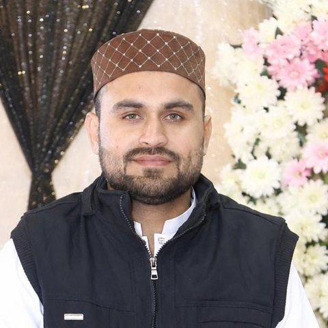
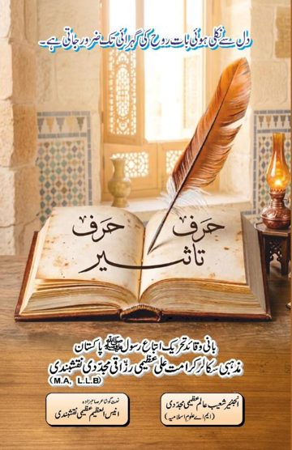
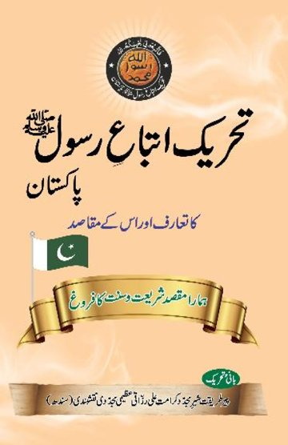
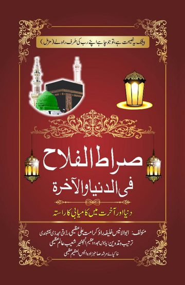
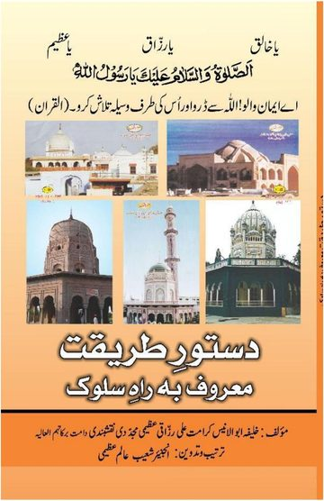

تحریکِ اتباعِ سنت پاکستان
ایک غیر سیاسی اصلاحی تحریک — شریعت اور سنت کی طرف دعوت
تحریک کے شعبے
تحریک کا تعارف
یہ ایک غیر سیاسی، فرقہ پرستی سے پاک اصلاحی تحریک ہے جو امامِ ربانی مجدد الفِ ثانیؒ اور اپنے مرشدینِ کاملین، شمس الکونین خواجہ محمد عبدالخالق نقشبندی، قادری، سہروردیؒ، شمس العارفین حضرت سائیں عبدالرزاق خالقی نقشبندیؒ اور امام الذاکرین سائیں محمد عظیم اللہ رزاقی نقشبندیؒ کے طریقے پر لوگوں کو شریعت اور سنت کی طرف بلاتی ہے۔
تحریک کے مقاصد
تحریک اتباعِ سنت پاکستان ایک غیر سیاسی اور فرقہ پرستی سے پاک اسلامی تحریک ہے، جس میں اُمتِ مسلمہ کا ہر فرد رکنیت حاصل کر سکتا ہے۔ اس تحریک کے بنیادی مقاصد درج ذیل ہیں:
- آج کے اس پُرفتن دور میں جب کہ بدعات و خرافات اپنے عروج پر ہیں، اُمتِ مسلمہ میں خوفِ خدا اور عشقِ مصطفیٰ ﷺ کے حصول کے لیے بدعات و خرافات سے بچنے اور شریعتِ مطہرہ اور سنتِ مصطفیٰ ﷺ کو سیکھنے سکھانے اور ان پر عمل کرنے کا شوق پیدا کرنا۔ اس سلسلے میں زیادہ سے زیادہ درس و تدریس کا اہتمام کرنے کے ساتھ ساتھ چلتے پھرتے شریعت و سنت کی تبلیغ کرنا۔
- شریعت و سنت اور قرآن کی تعلیم کے فروغ کے لیے زیادہ سے زیادہ دینی مدارس کا قیام کرنا۔
- خدمتِ خلق کا جذبہ پیدا کرنے اور یتیم پروری کو فروغ دینے کے لیے یتیم خانوں کا قیام کرنا۔
- بالخصوص نوجوان نسل کو بے حیائی اور برائی سے بچا کر پنجگانہ نماز باجماعت کے لیے مسجد میں لانا۔
- روزمرہ کے علاوہ شادی بیاہ اور دیگر خوشی و غمی کے مواقع پر ہونے والی بدعات کا خاتمہ کرنے اور شریعت و سنت کے فروغ کے لیے زیادہ سے زیادہ ذکرِ خدا اور ذکرِ مصطفیٰ ﷺ کی محافل کا انعقاد کرنا۔
- قرآن و سنت کی روشنی میں اولیائے کاملین کی حقیقی تعلیمات کا فروغ، اور جعلی، شعبدہ باز، جدی پشتی پیروں کی من گھڑت تعلیمات کا قلع قمع کر کے فی زمانہ تصوف کے مسخ شدہ چہرے کو تازگی بخشنا۔
- کریم آقا ﷺ سے کامل محبت کے حصول کے لیے درود و سلام اور محافلِ ذکر و نعت کو فروغ دینا۔
- معاشرتی اخلاقی برائیوں کا خاتمہ کرنا اور حسنِ سلوک اور اخلاقی تعلیمات کو رواج دینا۔
- خواتین میں فیشن پرستی کی بجائے شرعی پردے اور اپنے شوہروں کی تابعداری کا رجحان پیدا کرنا۔
- تمام عالمِ اسلام بالخصوص وطنِ عزیز پاکستان کی محبت و وفاداری کا جذبہ پیدا کرنا۔
- اوّل وقت میں نماز کی ادائیگی کو فروغ دینا۔ آج کل فجر و ظہر کی نمازیں مساجد میں زیادہ تاخیر سے ادا کی جاتی ہیں جو کہ نماز سے غفلت برتنا ہے، حالانکہ حنفی اوقات کے مطابق وقت بہت پہلے ہو جاتا ہے۔
- ناموسِ رسالت اور ختمِ نبوت کا تحفظ کرنا اور یہود و ہنود اور قادیانیوں کی سازشوں کو بے نقاب کرنا۔
اتباعِ رسول ﷺ
قرآنِ کریم کی روشنی میں
سورۂ آلِ عمران میں اللہ تعالیٰ فرماتا ہے: قُلْ اِنْ كُنْتُمْ تُحِبُّوْنَ اللّٰهَ فَاتَّبِعُوْنِيْ يُحْبِبْكُمُ اللّٰهُ وَيَغْفِرْ لَكُمْ ذُنُوْبَكُمْ(فرما دیجیے! اگر تم اللہ سے محبت کرتے ہو تو میری اتباع کرو، اللہ تم سے محبت کرے گا اور تمہارے تمام گناہ معاف فرما دے گا)۔ آپ ﷺ خدا تعالیٰ کے محبوب ہیں، محب اُس آدمی کو بھی اپنا محبوب بنا لیتا ہے جس میں اپنے محبوب کی عادتیں اور خصلتیں دیکھتا ہے۔ پس آپ ﷺ کی تابعداری میں کوشش کرنا مقامِ محبوبیت تک لے جانے اور گناہوں کو مٹانے والا ہے۔ ہر دانا و عقلمند پر واجب ہے کہ ظاہر و باطن میں آپ ﷺ کی کمال تابعداری میں کوشش کرے۔
سورۃ الاحزاب میں فرمایا: لَقَدْ كَانَ لَكُمْ فِيْ رَسُوْلِ اللّٰهِ اُسْوَةٌ حَسَنَةٌ لِّمَنْ كَانَ يَرْجُوا اللّٰهَ وَالْيَوْمَ الْاٰخِرَ وَذَكَرَ اللّٰهَ كَثِيْرًا(بیشک تمہارے لیے رسول اللہ ﷺ بہترین نمونہ ہیں اُس کے لیے جو اللہ اور آخرت کے دن کی امید رکھتا ہے اور اللہ کا ذکر کثرت سے کرتا ہے)۔ پس جو اللہ کی طرف رجوع کرے اور آخرت کی تیاری کرنا چاہے اور کثرت سے ذکرِ الٰہی بھی کرنے والا ہو تو اُسے چاہیے کہ زندگی کے ہر ہر پہلو میں نبی کریم ﷺ کے روشن طریقے کی پیروی کرے۔
سورۃ النساء میں فرمایا: مَنْ يُّطِعِ الرَّسُوْلَ فَقَدْ اَطَاعَ اللّٰهَ(جس نے رسول ﷺ کی اطاعت کی پس اُس نے حق تعالیٰ کی اطاعت کی)۔ معلوم ہوا کہ اللہ تعالیٰ نے اپنی اطاعت کو اپنے حبیب ﷺ کی اطاعت میں پوشیدہ رکھا ہے۔ اطاعتِ رسول ہی اطاعتِ الٰہی ہے اور ذکرِ رسول ﷺ عین ذکرِ خدا ہے۔ اب جو رسول اللہ ﷺ کی اطاعت کو اللہ تعالیٰ کی اطاعت سے جدا جانے وہ قرآن کا منکر ہے۔
اطاعتِ رسول ﷺ اللہ کے مقرب بندوں کی رفاقت و معیت کا ذریعہ: سورۃ النساء میں فرمانِ الٰہی ہے: وَمَنْ يُّطِعِ اللّٰهَ وَالرَّسُوْلَ فَاُولٰٓئِكَ مَعَ الَّذِيْنَ اَنْعَمَ اللّٰهُ عَلَيْهِمْ مِّنَ النَّبِيّٖنَ وَالصِّدِّيْقِيْنَ وَالشُّهَدَآءِ وَالصّٰلِحِيْنَ ۚ وَحَسُنَ اُولٰٓئِكَ رَفِيْقًا(جس نے اللہ اور اُس کے رسول ﷺ کی اطاعت کی تو یہ لوگ اُن حضرات کے ساتھ ہوں گے جن پر اللہ تعالیٰ نے انعام فرمایا یعنی انبیاء، صدیقین، شہداء اور صالحین، اور یہ حضرات بڑے اچھے ساتھی ہیں)۔
رسول اللہ ﷺ کی اطاعت کے بغیر اعمال ضائع ہو جاتے ہیں: سورۂ محمد میں ارشادِ الٰہی ہے: يٰٓاَيُّهَا الَّذِيْنَ اٰمَنُوْٓا اَطِيْعُوا اللّٰهَ وَاَطِيْعُوا الرَّسُوْلَ وَلَا تُبْطِلُوْٓا اَعْمَالَكُمْ(ایمان والو! اللہ کی اطاعت کرو اور رسول ﷺ کی اطاعت کرو اور اپنے اعمال کو ضائع مت کرو)۔
اطاعتِ رسول ﷺ رحمتِ خداوندی کا ذریعہ: سورۂ آلِ عمران میں ہے: وَاَطِيْعُوا اللّٰهَ وَالرَّسُوْلَ لَعَلَّكُمْ تُرْحَمُوْنَ(اللہ اور اُس کے رسول ﷺ کی اطاعت کرو تاکہ تم پر رحم کیا جائے)۔
اطاعتِ رسول ﷺ فلاحِ دارین کا سبب: وَمَنْ يُّطِعِ اللّٰهَ وَرَسُوْلَهٗ فَقَدْ فَازَ فَوْزًا عَظِيْمًااور جس نے اللہ اور اُس کے رسول ﷺ کی اطاعت کی تو اُس نے بہت بڑی کامیابی حاصل کی۔ (سورۃ الاحزاب)
سورۃ النور کی آیت ۵۱ میں بامراد مومنین کی صفت بیان فرمائی: (مسلمانوں کی بات تو یہ ہے کہ جب اُنھیں کسی مقدمہ میں اللہ اور اُس کے رسول ﷺ کی طرف بلایا جاتا ہے تاکہ اُن کے درمیان فیصلہ فرما دے تو وہ کہتے ہیں کہ ہم نے سنا اور مان لیا اور یہی لوگ فلاح پانے والے ہیں)۔ اگلی آیت میں فرمایا: وَمَنْ يُّطِعِ اللّٰهَ وَرَسُوْلَهٗ وَيَخْشَ اللّٰهَ وَيَتَّقْهِ فَاُولٰٓئِكَ هُمُ الْفَآئِزُوْنَ(اور جس نے اللہ اور اُس کے رسول ﷺ کی اطاعت کی اور اللہ سے ڈرا اور تقویٰ اختیار کیا پس یہی لوگ کامیاب ہونے والے ہیں)۔ اِس آیت کی وضاحت میں حضرت عمرؓ نے فرمایا کہ جو شخص فرائض میں اللہ تعالیٰ کی اطاعت اور سنتوں میں رسول اللہ ﷺ کی پیروی کرتا ہے اور گزشتہ ہونے والی غلطیوں کی وجہ سے اللہ تعالیٰ سے ڈرتا ہے اور آنے والی زندگی میں اللہ کی نافرمانی سے بچتا ہے یہی لوگ کامیاب ہیں، اور کامیاب وہ شخص ہے جسے آتشِ جہنم سے بچا کر جنت میں داخل کر دیا گیا۔ (ضیاء القرآن)
سورۃ الانفال میں فرمایا: اے ایمان والو! اللہ اور رسول ﷺ کے بُلانے پر حاضر ہو جب رسول تمہیں اُس چیز کے لیے بلائیں جو تمہیں زندگی بخشے گی۔ (۲۴)۔ حضور ﷺ کا بلانا ہی اللہ تعالیٰ کا بلانا ہے۔
سورۃ الحشر میں فرمانِ الٰہی ہے: اور جو کچھ تمہیں رسول ﷺ عطا فرمائیں وہ لو اور جس سے منع فرمائیں باز رہو اور اللہ سے ڈرو۔ (۷)۔ اِس آیتِ کریمہ سے معلوم ہوا کہ آپ ﷺ کی اطاعت یعنی احکامِ الٰہی پر عمل کرنا اور منکرات سے رُکنا واجب ہے، اللہ اُسے سخت عذاب دے گا جو آپ ﷺ کی نافرمانی کرے۔
احادیثِ مبارکہ کی روشنی میں
خَيْرُ الْهُدٰى هُدٰى مُحَمَّدٍ ﷺسب سے بہترین راستہ حضرت محمد ﷺ کا راستہ ہے۔ (بخاری)
فرمانِ مصطفیٰ ﷺ ہے کہ جو شخص میری سنت سے منہ پھیرے یا قصداً ترک کرے تو وہ ہم میں سے نہیں اور نہ وہ قیامت کے دن شفاعت کا مستحق ہو گا۔ اور جس نے میری سنت سے محبت کی اُس نے مجھ سے محبت کی، اور جس نے مجھ سے محبت کی پس وہ جنت میں میرے ساتھ ہو گا۔ (ترمذی)
میری اُمت کا ہر شخص جنت میں داخل ہو گا مگر جس نے میرا انکار کیا (وہ جنت میں نہیں جائے گا)۔ دریافت کرنے پر فرمایا: جس نے میری نافرمانی کی اُس نے میرا انکار کیا۔ اِس پر قرآن شاہد ہے: اُس دن ظالم شخص اپنے ہاتھوں کو چبا چبا کر کہے گا کہ ہائے کاش! میں نے رسول اللہ ﷺ کی راہ اپنائی ہوتی، ہائے افسوس! کاش کہ میں نے فلاں کو دوست نہ بنایا ہوتا۔ (سورۃ الفرقان: ۲۷)
حضور نبی کریم ﷺ نے دعا فرمائی کہ میرے نائبین پر اللہ تعالیٰ کی رحمت ہو۔ کسی نے عرض کی کہ آپ ﷺ کے نائبین کون ہیں؟ فرمایا: جو میری سنت سے محبت کرتے ہیں اور اُسے اللہ تعالیٰ کے بندوں کو سکھاتے ہیں۔ (جامع بیان العلم و فضلہ)
اپنے وصال سے قبل ارشاد فرمایا: تم میں دو چیزیں چھوڑ کر جا رہا ہوں، جب تک اِن دونوں پر مضبوطی سے قائم رہو گے گمراہ نہ ہو گے، ایک کتاب اللہ اور دوسری سنتِ رسول اللہ ﷺ۔ (بخاری، کتاب الاحکام)
اکابرین کے اقوال کی روشنی میں
ثانی اثنین سیدنا صدیقِ اکبر رضی اللہ عنہ: خلیفۂ اول بننے کے بعد اپنے تاریخی خطبے میں فرمایا کہ جب تک میں اللہ تعالیٰ اور اُس کے رسول ﷺ کی اطاعت کروں، تم میری اطاعت کرنا اور اگر میں اُن کے خلاف کروں تو میرا ساتھ چھوڑ دینا۔ آپؓ کو اتباعِ رسول ﷺ کا کمال شوق تھا۔ اِس کا اندازہ اِس گفتگو سے لگ سکتا ہے جو آپؓ کے وصالِ مبارک سے چند گھنٹے قبل آپ رضی اللہ عنہ کے اور آپ کی پیاری صاحبزادی اُم المومنین سیدہ عائشہ صدیقہؓ کے درمیان ہوئی۔ فرمایا: عائشہؓ! تم نے رسولِ خدا ﷺ کو کتنے کپڑوں میں دفن کیا تھا؟ عرض کیا کہ تین سفید کپڑوں میں جن میں نہ قمیص تھی نہ عمامہ۔ فرمایا: رسول اللہ ﷺ نے کس دن وفات پائی؟ عرض کی: پیر کے دن۔ فرمایا: آج کون سا دن ہے؟ عرض کیا: پیر۔ فرمایا: مجھے توقع ہے کہ میری وفات اِس وقت اور رات کے درمیان ہو گی۔ پس فضلِ الٰہی سے ایسا ہی ہوا کہ اللہ رب العزت نے بوقتِ وصال بھی آپ رضی اللہ عنہ کو اتباعِ رسول ﷺ کا شرف عطا فرمایا اور پیر کے روز تریسٹھ برس کی عمرِ مبارک میں آپ رضی اللہ عنہ کا وصال ہوا۔ فرمایا کرتے کہ جس فعل پر رسول اللہ ﷺ عمل کیا کرتے تھے میں اُسے بغیر کیے نہیں چھوڑتا، اگر میں حضور ﷺ کے حال سے کسی فعل کو چھوڑ دوں تو مجھے ڈر ہے کہ سنتِ رسول ﷺ سے منحرف ہو جاؤں گا۔
سلطان العارفین حضرت بایزید بسطامیؒ: آپ کو ایک شخص کے متعلق معلوم ہوا کہ وہ ہمیشہ سے قائم اللیل اور صائم النہار ہے۔ فرمایا: اُس نے اپنے اندر مجاہدہ سے صفاتِ ملائکہ پیدا کر لی ہیں مگر یہ کوئی مقام نہیں اور نہ ہی یہ ولایت ہے، بلکہ کمالِ ولایت یہ ہے کہ اپنے اندر صفاتِ محمدی ﷺ پیدا کرے، یعنی اپنی زندگی کے ہمہ اوقات اپنے قیام و صیام اور کلام و طعام کو سنتِ مصطفیٰ ﷺ کے مطابق ڈھال لے۔ شریعت کا راستہ پلِ صراط سے بھی زیادہ باریک اور خطرناک ہے لہٰذا کسی بھی حالت میں حدودِ شریعت سے باہر قدم نہیں رکھنا چاہیے۔
سید الطائفہ شیخ جنید بغدادیؒ: فرماتے ہیں کہ اتباعِ شریعت تو صرف وہ ہی کر سکتا ہے جس کے دائیں ہاتھ میں قرآن پاک ہو اور بائیں ہاتھ میں سنتِ مصطفیٰ ﷺ۔ اِن دونوں چراغوں کی روشنی میں راستہ طے کرے تاکہ نہ تو شبہ کے گڑھوں میں گرے نہ بدعت کے اندھیروں میں پھنسے۔
غوثِ زماں شیخ ابوالقاسم گرگانیؒ: فرماتے ہیں کہ سطحِ آب پر چلنا، ہوا میں پرواز کرنا اور غیب کی باتیں معلوم کرنا اور بیان کرنا، اِن میں سے کسی کو بھی کرامت نہیں کہہ سکتے کیونکہ یہ سب کچھ تو شیطان کی مدد سے بھی ممکن ہو سکتا ہے، بلکہ کتنے ہی کاہن ہیں جو غیب کی باتیں بیان کر دیتے ہیں۔ بلکہ سب سے بڑی کرامت یہ ہے کہ آدمی سراپا امرِ الٰہی بن جائے اور تن من دھن سے شریعت کا تابع ہو جائے اور اُس کے کسی فعل یا حرکت میں احکامِ شریعت کی خلاف ورزی کا شائبہ تک دکھائی نہ دے۔ اگر حالت یہ ہو تو وہ قابلِ اعتبار ہے۔ متابعتِ شریعت میں اگر تُو شیر پر سواری نہ کر سکے تو کوئی مضائقہ نہیں کیونکہ غصہ و غضب کے اُس کتے یعنی نفس کو جو تیرے سینے میں موجود ہے مغلوب کر لینا بہت سے شیروں پر سواری کرنے سے بدرجہا افضل ہے۔ نفس کے مکر و فریب سے آگاہی حاصل کر لینا سب سے بڑی غیب دانی ہے۔ حس و خیال کے دائرے سے باہر ہو جانا پانی پر چلنے اور ہوا میں اُڑنے سے کچھ کم تو نہیں۔ دنیا کے لالچ اور دنیاوی مشغلوں سے بے نیاز ہو کر آگے نکل جانا اور ایک مشتبہ یعنی مشکوک درہم کو ٹھکرا دینا بہت بڑے بڑے میدانوں کو، جنگلوں کو پھلانگ جانے اور ایک دشوار گزار گھاٹی کو عبور کر لینے سے کم تو نہیں، کہ حق تعالیٰ نے اِن رکاوٹوں کو اپنے کلامِ پاک میں گھاٹیوں سے موسوم کیا ہے۔
حضرت داتا گنج بخش ہجویریؒ: روحانی ترقی کے لیے اتباعِ شریعت کو لازمی قرار دیتے ہوئے فرماتے ہیں کہ شریعت میں پہلا رکن کتاب ہے۔ جیسے خدا تعالیٰ فرماتا ہے: قرآن پاک میں آیاتِ محکمات ہیں کہ وہ اصل کتاب ہیں۔ (سورۂ آلِ عمران: ۷)۔ دوسرا رکن سنتِ رسول ﷺ ہے جس کا ماخذ احادیث ہیں۔ جیسے کہ قرآن پاک میں ہے: اور جو رسول اللہ ﷺ نے فرمایا ہے اُس پر عمل کرو اور جس بات کو منع فرمایا ہے اُس سے بچو۔ (سورۃ الحشر)۔ تیسرا رکن اجماعِ اُمت ہے کہ رسول اللہ ﷺ نے فرمایا: میری اُمت گمراہی پر جمع نہیں ہوتی، ہمیشہ سوادِ اعظم کو اختیار کرو۔ اِس سے تقلید کا جائز ہونا بھی واضح ہو گیا۔ کوئی صوفی شریعت اور حقیقت میں فرق نہیں کر سکتا۔ صوفیانہ تعلیمات مکمل طور پر احکامِ شریعت کے تابع ہیں۔ لہٰذا طریقت دراصل شریعت ہی کو اپنی زندگی کی گہرائیوں میں پانے کا نام ہے۔
غوث الاعظم محی الدین شیخ عبدالقادر جیلانیؒ: فرمایا کہ ظلمت میں چراغ لے کر داخل ہو اور وہ چراغ کتاب اللہ اور نبی کریم ﷺ کی سنتِ مبارکہ ہے۔ کتاب و سنت کے احکام سے ہرگز باہر نہ نکل۔ اگر تیرے دل میں کوئی خطرہ لاحق ہو جیسے زنا، سود اور اہلِ فسق و فجور کے ساتھ میل جول وغیرہ، یا الہام پیدا ہو تو اُسے کتاب و سنت کی روشنی میں دیکھ، اگر تُو کتاب و سنت میں اُس کی حرمت پائے تو اُسے قبول نہ کر اور اُس سے الگ ہو جا اور یہ یقین کر لے کہ وہ شیطان مردود کی طرف سے ہے۔ بندہ حدودِ شرع کی حفاظت کی وجہ سے اُس غلام کی طرح ہو جاتا ہے جسے مالک تمام امور سپرد کر دیتا ہے۔ (فتوح الغیب)
شیخ الشیوخ شیخ شہاب الدین عمر سہروردیؒ: سلسلہ سہروردیہ کے بانی، حضرت بہاؤالدین زکریاؒ کے مرشد، کتاب عوارف المعارف میں فرماتے ہیں کہ رسولِ اکرم ﷺ نے فرمایا: اُس ذات کی قسم جس کے قبضہ میں میری جان ہے! اللہ تعالیٰ کو وہی لوگ محبوب ہیں جو اُس کے بندوں میں محبتِ الٰہی کا جذبہ بیدار کرتے ہیں اور اُنھیں اللہ کا محبوب بنانے کی کوشش کرتے ہیں، بلکہ روئے زمین پر ہر شخص کے ساتھ خیر خواہی کے لیے سرگرمِ عمل ہوتے ہیں۔ اِس حدیث میں مشائخِ کرام کے اوصاف بیان کیے گئے ہیں۔ شیخ دعوت الی اللہ میں پیغمبروں کی نیابت کرتے ہوئے اپنے مرید میں اللہ کی محبت اِس طرح پیدا کرتا ہے کہ وہ اُسے رسولِ اکرم ﷺ کی اتباع اور پیروی کی راہ پر لگا کر تزکیۂ نفس کی راہ پر چلاتا ہے۔ چنانچہ جو صحیح طریقہ سے رسولِ اکرم ﷺ کی اتباع کرتا ہے تو اللہ بھی اُس سے محبت کرنے لگتا ہے۔
امام الطریقت خواجۂ خواجگان سید محمد بہاؤالدین نقشبندؒ: ہمارے طریقے کی بنیاد احادیث و آثار کی متابعت پر ہے اور ہمارا مقصد یہ ہے کہ ہمارا سلوک سنتِ رسول ﷺ کی اتباع پر ہو اور حق کی باطل سے تمیز ہوتی ہو۔ خاصانِ خدا وہ ہیں کہ شریعتِ مطہرہ کی پیروی کریں اور اہلِ سنت و الجماعت کے مذہب پر اپنی زندگانی پوری کریں۔ اگر ریاضت میں کمر ٹیڑھی ہو کر تمہارا بدن کمان کی طرح ہو جائے اور ریاضت میں بھی کامیاب ہو مگر جب تک اپنے لقمہ و لباس پاک نہ کرے اور شریعتِ رسول ﷺ کی پیروی نہ کرے منزلِ مقصود تک نہ پہنچے گا۔ لہٰذا تمام کاموں کا دار و مدار اِسی پر ہے۔ (انیس الطالبین)
امامِ ربانی محبوبِ سبحانی حضرت مجدد الف ثانیؒ: فرماتے ہیں کہ شریعت کے تین جز علم، عمل اور اخلاص ہیں۔ جب تک یہ تینوں جز ثابت نہ ہوں شریعت حاصل نہیں ہوتی۔ اور جب شریعت حاصل ہو گئی تو گویا حق تعالیٰ کی رضامندی حاصل ہو گئی، جیسا کہ ارشادِ الٰہی ہے: (اور اللہ تعالیٰ کی رضا سب سے بڑھ کر ہے)۔ پس ایسا کوئی مطلب باقی نہیں جس کے حاصل کرنے کے لیے شریعت کے سوا اور کسی چیز کی حاجت پڑے۔ طریقت و حقیقت جن سے صوفیا ممتاز ہیں، یہ شریعت کے تیسرے جز اخلاص کے کامل کرنے میں شریعت کے خادم ہیں۔ پس اِن دونوں کی تکمیل کا مقصد شریعت کی تکمیل ہے، نہ کہ شریعت کے سوا کوئی اور کام۔ زبان سے جھوٹ نہ بولنا شریعت ہے اور دل سے جھوٹ کا خطرہ دور کرنا یعنی سچائی کی عادت بغیر تکلیف و تصنع کے حاصل ہو جانا حقیقت یعنی تصوف ہے۔ پس تصوف شریعت کو کامل کرنے والا ہے نہ کہ اُس کا مخالف۔ وہ علوم و معارف جو صوفیاء کو اِس راہ میں حاصل ہوتے ہیں وہ اصلی مقصد نہیں ہیں بلکہ وہم و خیالات ہیں جن سے طریقت کے بچوں کی تربیت کی جاتی ہے۔ اِن سب سے گزر کر مقامِ رضا تک پہنچنا چاہیے کیونکہ یہ جذبہ و سلوک کا سب سے اعلیٰ مقام ہے۔ بے سمجھ لوگ اِن تجلیات و مشاہدات کو اصلی مقصد خیال کر کے شریعت کے کمالات سے محروم رہ جاتے ہیں۔ ہاں مقامِ اخلاص اور مرتبۂ رضا تک پہنچنا اِن احوال کے طے کرنے اور علوم و معارف کے حصول پر منحصر ہے۔ پس یہ احوال و معارف اصل مطلب کے حصول کے لیے اسباب اور وسیلہ ہیں۔ شریعت، احوال کے تابع نہیں بلکہ باطنی احوال شریعت کے تابع ہیں، کیونکہ شریعت قطعی ہے، وحی سے ثابت ہے اور احوال گمانی ہیں جو کشف و الہام سے ثابت ہوتے ہیں۔ پس جس گروہ کو حق تعالیٰ نے آپ ﷺ کی اتباع کی وجہ سے نہایت النہایہ تک پہنچایا ہے وہ علم و عمل میں بال برابر بھی شریعت کے مخالف نہیں ہوتا۔ اور علومِ لدنی جو اُن پر وارد ہوتے ہیں وہ شریعت کے موافق ہیں بلکہ علومِ شرعیہ کی تفصیل ہیں۔ ہر وہ کشف جو ظاہرِ شریعت کے خلاف ہو قابلِ قبول نہیں ہے کیونکہ وہ آپ ﷺ کے رستے سے ہٹ کر ہے۔ سورۂ یٰسین میں فرمانِ الٰہی ہے: (بیشک آپ ﷺ رسولوں میں سے ہیں اور صراطِ مستقیم پر ہیں)۔ تعجب ہے بعض ناقص اپنے خیالی کشف کو معتبر سمجھتے ہیں اور روشن شریعت کی مخالفت اور انکار میں کوشش کرتے ہیں، حالانکہ حضرت موسیٰ علیہ السلام بھی باوجود اپنی کلیمی اور قربِ خاص کے اگر دنیا میں ہوتے تو وہ بھی اِسی شریعتِ مطہرہ کی پیروی کرتے۔
سورۃ البقرہ میں ہے: جو ایمان والے ہیں اُن کی محبت اللہ کے لیے بہت شدید ہے۔ (۱۶۵)۔ پس شرعی احکام بجا لانے کی توفیق محبتِ الٰہی کا نتیجہ ہے اور باطنی جمعیت کا حاصل ہونا اِسی محبت کا ثمر ہے۔ اگر تمام جہان جتنی ظلمتیں اور کدورتیں باطن میں ڈال دیں اور اِس محبت کو قائم کر لیں تو کچھ غم نہیں کرنا چاہیے، اور اگر تمام پہاڑوں کے برابر انوار و کیفیات باطن میں زیادہ کر دیں لیکن اِس محبت میں بال برابر کمی کر دیں تو اِسے سوائے خرابی کے کچھ نہ جاننا چاہیے۔ سچے اور جھوٹے کے درمیان فرق شریعت پر استقامت یا عدمِ استقامت سے معلوم ہوتا ہے۔ جو شخص سچا ہے وہ باوجود سکر و مستی اور بے خودی کے بال برابر بھی شرع کے خلاف نہیں کرتا۔ مولانا رومؒ استغراق میں رہتے مگر نماز کے وقت ہوش میں آ جاتے۔
رسول اللہ ﷺ نے فرمایا: تم میں سے کوئی مومن نہ ہو گا جب تک اُس کی خواہش اُس امر کے تابع نہ ہو جائے جو میں لایا ہوں۔ پس شرعی تکلیفوں میں حکمت یہی ہے کہ نفسِ امارہ خراب اور عاجز ہو۔ جس قدر شریعت کے موافق عمل کیا جائے اُسی قدر نفسانی خواہشات کم ہو جاتی ہیں۔ یہی وجہ ہے کہ احکامِ شرعی میں سے ایک حکم کا بجا لانا نفسانی خواہشوں کو دور کرنے میں اُن ہزار سالہ ریاضتوں اور مجاہدوں سے جو اپنے پاس سے کیے جائیں کئی درجہ بہتر ہے، بلکہ ایسی ریاضتیں اور مجاہدے جو شرع کے موافق نہ ہوں وہ نفسانی خواہشات کو مدد اور قوت دینے والے ہیں۔ برہمنوں اور جوگیوں کو محنت مجاہدوں سے سوائے نفس کی تقویت و تربیت کے کچھ فائدہ نہ ہوا۔ مثلاً نمازِ فجر کی دو رکعتوں کو جماعت کے ساتھ ادا کرنا جو سنتوں میں سے ایک سنت ہے، تمام رات قیام کر کے نمازِ فجر بے جماعت ادا کرنے سے کئی درجہ بہتر ہے، اور شریعت کے حکم سے عید الفطر کے دن کا کھانا اپنی مرضی کے موافق کئی سال روزے رکھنے سے بہتر ہے، اور نفس کو خراب کرنے کے لیے زکوٰۃ کے طور پر ایک روپیہ خرچ کرنا اپنی مرضی سے ہزار روپوں کے خرچ کرنے سے بہتر ہے۔ غرض جب تک نفس صاف ہو کر سرداری کی پلیدی سے پاک نہ ہو جائے تب تک نجات مشکل ہے اور ہمیشہ کی موت تک پہنچنے کا خطرہ ہے۔
پسندیدہ متابعت کا ایک ذرہ تمام دنیاوی لذتوں اور آخرت کی نعمتوں سے کئی درجے بہتر ہے۔ بزرگی، سنت کی تابعداری اور زیادتی، شریعت کی بجا آوری پر منحصر ہے۔ جو کچھ شریعت کے مخالف ہے مردود ہے۔ جس حقیقت کو شریعت نے رد کر دیا وہ زندیقہ ہے۔ شریعت کو اپنی جگہ پر قائم رکھ کر حقیقت کو طلب کرنا بہادروں کا کام ہے۔ حضور ﷺ کے دین کی حقیقت کی تصدیق کرنے کے بعد تھوڑا سا عمل بھی بجا لانا عملِ کثیر کے برابر ہے۔ اصحابِ کہف نے اتنا بڑا درجہ صرف ایک ہی نیکی کے باعث حاصل کیا اور وہ نورِ ایمانی کے ساتھ خدا تعالیٰ کے دشمنوں کے غلبہ کے وقت ہجرت کر جانا تھا، کیونکہ دشمنوں کے غلبہ کے وقت اگر تھوڑا سا بھی تردد کریں تو اِس قدر نمایاں اور قابلِ اعتبار ہوتا ہے کہ امن کے دنوں میں اِس سے کئی گنا عمل بھی اعتبار میں نہیں آ سکتا۔ اگر ظاہری ہجرت میسر نہ ہو سکے تو باطنی ہجرت کو مدِنظر رکھتے ہوئے مخلوق کے درمیان رہتے ہوئے اُن سے الگ رہنا چاہیے۔ بروزِ محشر شریعت کے متعلق پوچھیں گے نہ کہ تصوف کے بابت۔ جنت میں داخل ہونا اور دوزخ سے بچنا شریعت کے احکام بجا لانے پر منحصر ہے۔ انبیاء کرام کی پیدائش کا مقصد احکامِ شریعت کا لوگوں تک پہنچانا ہی ہے۔ پس سب سے بڑی بھاری نیکی یہی ہے کہ شرع کو رواج دینے اور اِس کے احکام میں سے کسی حکم کے زندہ کرنے میں کوشش کی جائے، خاص کر ایسے زمانہ میں جب کہ اسلام کے نشان بالکل مٹ گئے ہوں۔ اور جس شخص پر بہت سے لوگوں کی نجات وابستہ ہو وہ اُس شخص سے بہتر ہے جو صرف اپنی نجات کے خیال میں ہے۔
ارشادِ الٰہی ہے: (بیشک یہ میرا سیدھا راستہ ہے تم اِس پر چلو اور راستوں پر نہ چلو)۔ رسول اللہ ﷺ نے فرمایا: مجھے میرے رب نے ادب سکھایا اور میری تعلیم و تادیب اچھی طرح کی۔ پس اگر طریقت و حقیقت کی راہ پر چلنے والوں سے دورانِ راہ ایسے امور سرزد ہوں جو بظاہر شریعت کے خلاف ہوں تو وہ غلبۂ حال یعنی مستی پر مبنی ہیں اور اِس مقام سے گزر کر ہوش میں آنے پر وہ مخالفت ختم ہو جاتی ہے۔ محمدی المشرب بزرگ شرع و سنت کی دولت کے ساتھ مشرف ہیں اور ولایتِ خاصۂ محمدی ﷺ اُن کا حصہ ہے۔ فنائے اتم اور بقائے اکمل انہی کی شان ہے۔ اور اِس کا مخالف اگرچہ اولیاء میں سے ہو اور اُس کو کشف ہوتا ہو تو اُس کا اِس ولایت میں حصہ نہیں ہے اور وہ گزشتہ پیغمبروں میں سے کسی پیغمبر کے قدم پر ہے اور اُس کے علوم اُسی نبی کی شریعت کے موافق ہیں۔ شریعتِ محمدی ﷺ دیگر شریعتوں کا خلاصہ ہے۔ شریعت و سنت کی اتباع کے بغیر اِس منزل تک پہنچنا محال ہے۔ پس اُس شخص کے لیے مبارکباد ہے جس کو اِس بھاری نعمت کا شرف حاصل ہوا اور افسوس ہے اُس شخص پر جو اعلیٰ نعمت سے محروم ہوا۔
آپ ﷺ کی ظاہری میراث کا شکر یہ ہے کہ باطنی میراث سے آراستہ ہوا جائے، اور باطنی میراث سے آراستہ ہونا آپ ﷺ کی کامل پیروی کے بغیر ناممکن ہے۔ اور آپ ﷺ کی کمال محبت کی علامت یہ ہے کہ حضور ﷺ کے دشمنوں کے ساتھ بغض رکھیں اور شریعت کے مخالفوں کے ساتھ عداوت کا اظہار کریں۔ محبت میں چاپلوسی جائز نہیں کیونکہ محب اپنے محبوب کا دیوانہ ہوتا ہے اور دو مخالف محبتیں اکٹھی نہیں ہو سکتیں۔ پس لازم ہے کہ اپنی تمام ہمت احکامِ شریعہ کی بجا آوری اور اہلِ شریعت علماء اور اولیاء کی تعظیم کے بجا لانے اور بدعتیوں کو خوار رکھنے میں صرف کریں۔ جس نے کسی بدعتی کی تعظیم کی گویا اسلام گرانے میں اُس کی مدد کی۔ حق تعالیٰ اپنے نبی ﷺ کے طفیل ہمارے ظاہر و باطن کو سنتِ رسول ﷺ کی متابعت سے آراستہ و پیراستہ کرے۔ (مکتوباتِ امامِ ربانی مجدد الف ثانیؒ)
ہماری گزارشات
جذبۂ حب الوطنی
حضور نبی کریم رؤف الرحیم ﷺ نے فرمایا: وطن کی محبت ایمان سے ہے۔ (الحدیث)
پس ہمیں چاہیے کہ دینِ اسلام کی سربلندی اور اپنے وطنِ عزیز پاکستان کے استحکام کے لیے شب و روز کوشاں رہیں۔ نیز اپنے بچوں کے دلوں میں خوفِ خدا اور عشقِ مصطفیٰ ﷺ کے ساتھ ساتھ جذبۂ حب الوطنی بھی پیدا کریں۔ اِس کا بہترین طریقہ یہ ہے کہ جشنِ آزادی کے موقع پر بھی اللہ تعالیٰ اور نبی کریم ﷺ کے ذکر کے ساتھ اپنے اسلاف کی سیرتیں بھی بیان کی جائیں۔ نیز جو شخص جس محکمے میں اپنے فرائض سرانجام دیتا ہو وہ صدق و دیانتداری کو اپنا شعار بنائے، حتیٰ کہ گھر میں رہنے والے خواتین و حضرات بھی اپنی ذمہ داریاں احسن طریقے سے سرانجام دیں۔ اپنے معاشرے کو بہتر بنانے کے لیے اپنے ہمسایوں اور قریبی مساکین و فقراء کا خیال رکھیں، آپس میں پیار محبت، اتفاق و اتحاد اور حسنِ سلوک سے زندگی بسر کریں۔ ایک اچھا مسلمان ہی اچھا انسان اور ایک اچھا پاکستانی ہو سکتا ہے۔
بے پردگی اور موبائل فونز کا منفی استعمال اور اِن کا سدِ باب
سورۃ النور میں فرمانِ الٰہی ہے: اور آپ (ﷺ) مسلمان عورتوں سے فرما دیجیے کہ وہ اپنی نگاہیں نیچی رکھیں اور اپنی عفت کی حفاظت کریں اور اپنے بناؤ سنگھار کو ظاہر نہ کریں۔ (۳۱)۔ اور فرمایا: اپنے گھروں میں سکون سے ٹھہری رہو اور پرانی جاہلیت کی بے پردگی کی طرح نہ رہو۔ (سورۃ الاحزاب)۔ اور فرمایا: خیموں کے اندر پردہ نشین حوریں ہیں۔ (سورۃ الرحمٰن: ۷۲)۔ جنت میں حوریں بھی پردہ کریں گی جہاں برائی کا کوئی خدشہ بھی نہ ہو گا۔ درحقیقت پردہ تو عورت کی حیا اور حُسن ہے۔
آج اِس پُرفتن دور میں جب کہ بے پردگی اور بے حیائی عروج پر ہے ہمیں اپنی پاکیزہ بیٹیوں کی عفت کے تحفظ کے لیے مل کر بے پردگی کی اِس قبیح رسم کا خاتمہ کرنا ہو گا، اور اپنی بہو بیٹیوں کو شرعی پردہ کرنے کی ترغیب دینا ہو گی۔ آج کی روشن خیال خواتین کہتی ہیں کہ پردہ تو نظر کا ہوتا ہے۔ جب صحابیات نے کریم آقا ﷺ سے پردہ کیا اور اللہ تعالیٰ نے اپنے پاک کلام میں ہر غیر محرم سے پردہ کرنے کا حکم فرما دیا تو آج کی اِس روشن خیالی کی کیا وقعت رہ جاتی ہے۔
علاوہ ازیں! ہمیں اپنے بچوں کو جہاں تک ممکن ہو سکے موبائل فونز کے منفی استعمال سے بھی بچانا ہو گا۔ آج وہی دور آ چکا ہے جس کے متعلق آپ ﷺ نے فرمایا تھا کہ فتنے گھروں کے دروازے توڑ کر اندر داخل ہو جائیں گے۔ موبائل فون اور ٹی وی ہی وہ فتنہ ہیں جن کے ذریعے گھر بیٹھے بچوں تک بے حیائی اور برائی کی رسائی ممکن ہو گئی ہے۔ آج واٹس ایپ سٹیٹس اور سوشل میڈیا پر سوائے ناچ گانے اور لہو و لعب کے کچھ نظر نہیں آتا۔ خدارا! اپنے آپ کو اور اپنے گھر والوں کو اُس آگ سے بچائیں جس کا ایندھن آدمی اور پتھر ہیں۔
آپ اِس کارِ خیر میں ہمارے معاون کس طرح بن سکتے ہیں
اگر آپ ہماری اِس تحریک کے اغراض و مقاصد سے متفق ہیں تو ہمارے نامزد کردہ کارکنان سے رابطہ کر کے رکنیت فارم اور ڈاک لفافہ بالکل مفت حاصل کر کے اِس تحریک کی ممبرشپ اختیار کر سکتے ہیں۔
اگر آپ باقاعدہ ممبر نہیں بننا چاہتے تو اِس تحریک کے پھیلاؤ کے لیے اِس کتابچہ میں درج گزارشات پر جس قدر بھی ہو سکے انفرادی یا اجتماعی کوشش کر کے ہمارا ساتھ دیں۔
ماخذ: کتابچہ «تحریک اتباعِ سنت پاکستان کا تعارف اور اس کے مقاصد»
بانی و قائد کا تعارف

بانیِ تحریک اتباعِ سنت پاکستان
Baani-e-Tehreek Ittiba-e-Sunnat Pakistan — Peer-e-Tariqat Karamat Ali Razzaqi Azimi Mujaddidi Naqshbandi
(MA, LLB)
ابتدائی حالات و تعلیم
بانی و قائد تحریک اتباعِ سنت پاکستان، پیرِ طریقت کرامت علی بن محمد الیاس رزاقی کا تعلق گوٹھ محمد ابڑو، صوبہ سندھ سے ہے۔ نسب کے اعتبار سے آپ راجپوت قوم سے تعلق رکھتے ہیں۔ ابتدائی تعلیم کے بعد 1983-84ء میں ٹنڈو آدم نیو علی گڑھ کالج سے بی کام کیا، اور دورانِ ملازمت ایم اے اکنامکس کے بعد ایل ایل بی کیا۔
ملازمت
1985ء میں آپ پاکستان پوسٹ میں سینئر کلرک بھرتی ہوئے۔ 2013ء میں بحیثیت اسسٹنٹ سپرنٹنڈنٹ پوسٹل سروسز، بحکمِ پیشوا، ریٹائرمنٹ کے مقررہ وقت سے دس سال قبل ریٹائرمنٹ لے کر سلسلہ عالیہ کی ترویج میں شب و روز مشغول ہو گئے۔
بیعت و خلافت
مذہبی گھرانہ ہونے کی وجہ سے شروع ہی سے مذہب کی طرف رجحان رہا اور اپنے بزرگوں کی تقلید میں 1981ء میں سلسلہ عالیہ نقشبندیہ کی عظیم روحانی شخصیت قطبِ عالم حضرت سائیں عبدالرزاقؒ کے دستِ اقدس پر بیعت ہوئے۔ اُس وقت کالج میں زیرِ تعلیم تھے لیکن سر پر ہمیشہ ٹوپی رکھتے اور نمازوں کی پابندی کا خاص خیال رکھتے تھے۔ بعد ازاں آپ نے اپنے پیر و مرشد امام الذاکرین حضور محمد عظیم اللہ رزاقی نقشبندیؒ کی خدمت میں وقتاً فوقتاً کافی عرصہ گزارا اور اُن کی پُرفیض صحبت سے فیضیاب ہوئے۔ نومبر 2006ء میں پیر و مرشد نے آپ کو اپنی خلافت و نیابت سے مشرف فرمایا۔
دینی خدمات
ہر سال بڑے پیمانے پر عرسِ مبارک کا اہتمام فرماتے ہیں۔ پیر بھائیوں سے زیادہ سے زیادہ رابطہ، بذریعہ وعظ تبلیغِ دین اور محافلِ ذکرِ حبیب ﷺ کا انعقاد آپ کا طریقہ ہے۔ دین اور سلسلہ کا پیغام پہنچانے کے لیے سوشل میڈیا کا مثبت استعمال بھی کرتے ہیں، اور خلفائے راشدین، اہلِ بیتِ اطہار اور بزرگانِ دین کے ایامِ وصال پر بالخصوص آن لائن ٹرانسمیشن کا اہتمام کراتے ہیں۔ اسی مشن کے تحت پاکستان کے مختلف علاقوں کا سفر بھی کرتے رہتے ہیں۔
آپ کے گاؤں میں 1972ء سے قائم شدہ مدرسہ عربیہ خالقیہ رزاقیہ کا انتظام بھی آپ کے پاس ہے۔ علاوہ ازیں اپنے گاؤں میں دانش کدۂ عظیم مرکزِ علم و عرفان بھی تعمیر کرایا ہے، جو مرکزی آفس تحریک اتباعِ سنت پاکستان، لائبریری مجدد الفِ ثانیؒ، زیرِ تعمیر مسجد سیدنا صدیقِ اکبرؓ، اور یتیم و مستحق بچوں کی دینی و عصری تعلیم اور کفالت کے لیے مدرسہ و یتیم خانہ پر مشتمل ہے۔ خواتین کے لیے بھی الگ مدرسہ کا اہتمام کیا ہوا ہے۔ دیگر پیر بھائیوں کو بھی مدارس کے قیام کے ساتھ ساتھ محافلِ ذکر و نعت کے اہتمام کی ترغیب دلاتے ہیں۔
طریقۂ تربیت
آپ روایتی پیری مریدی سے ہٹ کر اپنے مرشدینِ کاملین کے طریقہ کے عین مطابق اپنے مریدین اور ہر آنے والے کو ہمیشہ توحید، خوفِ خدا، توکل علی اللہ اور نبی کریم ﷺ کی محبت و اتباع کا درس دیتے ہیں۔ مدارس کے قیام اور دینی تعلیم کے ساتھ ساتھ عصری تعلیم کا بھی خصوصی انتظام کرواتے ہیں۔ مشائخِ عظام کے کشف و کرامات پر مبنی کتابوں کی بجائے، جن میں یقیناً کافی حد تک مبالغہ بھی ہوتا ہے، اُن علو مرتبت مشائخ کی اپنی تصانیف پڑھنے کی ہدایت کرتے ہیں۔
تصانیف
سلسلہ عالیہ میں مزید علمی ذوق پیدا کرنے کے لیے شریعت و طریقت پر مبنی دس سے زائد کتب تحریر و تالیف فرما چکے ہیں۔ اپنی لکھی ہوئی نعتوں اور مناقب کا مجموعہ «حروفِ ثناء» کے نام سے چھپوا چکے ہیں۔ اس سلسلے کو مزید فروغ دینے کے لیے شبانہ روز کوشاں ہیں۔
تحریر: انجینئر شعیب عالم عظیمی مجددی
صاحبزادگان کا تعارف

آپ نے سندھ یونیورسٹی سے گریجویشن کی ہے اور اس وقت سندھ پولیس میں وائرلیس آپریٹر کے طور پر خدمات انجام دے رہے ہیں۔ آپ محافل میں شرکت کرتے ہیں اور بڑے پُرجوش انداز میں نقابت فرماتے ہیں۔
مرشدینِ کاملین کا تعارف
مونسِ بیوگان، دستگیرِ یتامیٰ، فاتحِ قادیانیت
شمس الکونین خواجہ محمد عبدالخالق شمس العرفانی نقشبندیؒ
ابتدائی حالات
آپ شمس العرفان خواجہ قادر بخشؒ کے شہزادے اور شمس العارفین غوثِ زماں سائیں عبدالرزاقؒ کے پیر و مرشد ہیں۔ آپ کا خطاب ابوسعد ہے۔ ۷ شوال ۱۲۷۰ھ / ۱۸۵۴ء بروز جمعۃ المبارک بوقتِ صبحِ صادق جہانخیلاں میں پیدا ہوئے۔ خود فرماتے ہیں کہ تین برس کی عمر میں مجھے ملائکہ میں قطبِ زماں پکارا جاتا تھا، اور سات سال کی عمر میں نبی کریم ﷺ اور تمام انبیائے کرام نے مجھے اپنی زبانیں مبارک چسائیں اور فرمایا کہ ہم نے سارا علم تمہیں دے دیا۔ ابھی آپ تقریباً تین سال کے ہی تھے کہ والد بزرگوار شمس العرفان خواجہ قادر بخشؒ نے شہادت پائی۔
علمِ دین کا حصول
علمِ حدیث کے لیے سہارنپور میں مولانا احمد علی محدثؒ کی خدمت میں حاضر ہوئے۔ مولانا حسین احمد کانپوریؒ اور پیر مہر علی شاہ گولڑویؒ آپ کے ہم سبق تھے۔ بعد ازاں دہلی میں مولوی کریم اللہ صاحبؒ و مولوی سعید احمدؒ سے علومِ دینیات پر پوری طرح عبور حاصل کیا۔ اللہ تعالیٰ کے فضل و کرم سے آپ ایک گنجینۂ علوم و کمال تھے۔ جب کسی طرح کا کوئی مسئلہ آپ کے سامنے پیش کیا جاتا تو وضاحت کے ساتھ معہ حوالہ جات اس طرح بیان فرماتے کہ بڑے بڑے مفتی حضرات ششدر رہ جاتے۔ خلیفہ مولوی عبدالکریم جسری صاحبؒ اپنی کتاب «خالقیہ» میں لکھتے ہیں کہ خواجہ صاحبؒ موجودہ زمانہ میں کامل و اکمل شخص ہیں اور مولویوں کی جماعت کے ایک بڑے عالم ہیں۔
بحیثیت مبلغِ دین
آپؒ اکثر کھڑے ہو کر تقریر فرمایا کرتے تھے۔ آپؒ کے ابتدائی ملفوظات و بیانات رشد و ہدایات اور ترغیبِ مذہب و اشاعتِ اسلام پر مبنی تھے۔ جب اللہ تعالیٰ نے آپؒ کو خدمتِ خلق کے لیے حکم فرمایا تو منصبِ خدمت سے معمور ہو کر خدمتِ خلائق پر کمر باندھی، اور خصوصیت کے ساتھ دو خدمات یعنی نکاحِ بیوگان اور خدمتِ یتامیٰ و مساکین انجام دیں۔
سیاحت فی طلبِ مرشد
چھ سال سے پینتیس سال کی عمر تک آپ کا زیادہ وقت سفر میں گزرا۔ اس طلب میں تمام ہندوستان، افغانستان، ایران و عرب وغیرہ میں سفر کیا۔ (خود فرماتے ہیں:) پیر پٹھان شاہ سلیمان تونسویؒ، کعبہ شریف میں حاجی امداد اللہ مہاجر مکیؒ اور مدینہ شریف میں صاحبان عبدالغنی و مولانا محمد عمرؒ اور دیگر بزرگان کی خدمت میں بھی پہنچا، مگر بیعت کے لیے سوال اس شرط پر کرتا تھا کہ اگر آپ میرے تمام بدن سے اللہ، اللہ جاری کرا دیں تو بیعت ہوں گا۔ مشائخ جب یہ سوال سنتے تو ہاتھ کھینچ لیتے تھے۔
بیعت و خلافت فی سلسلۂ قادریہ
فرماتے ہیں: الٰہ آباد میں شیخ احمد بخاری قادریؒ کی خدمت میں پہنچا تو مجھے دیکھتے ہی فرمایا: «برو برو دیگر را بگیر» — جاؤ کوئی اور راستہ دیکھو۔ میں بیتابانہ دوڑ کر قدموں سے لپٹ گیا۔ نہایت شفقت کے ساتھ میرا سر اٹھا کر سینے سے لگایا، اور بیعت فرمانے کے لیے جس وقت شیخ صاحبؒ نے اپنے دستِ مبارک میں میرا ہاتھ لیا اور توجہ دی تو میں بے ہوش ہو گیا۔ اس وقت میرے ہر موئے تن سے اللہ جاری تھا۔ اسے ہی قرآن مجید میں ذکرِ کثیر فرمایا ہے اور اسے سلطان الاذکار کہتے ہیں۔
چھ ماہ کی خدمت کے بعد ایک روز سب درویشوں کے روبرو شیخ صاحب نے دستارِ خلافت میرے سر پر باندھنی چاہی اور فرمایا کہ کیا یہ اس قابل ہے یا نہیں؟ کسی کے جواب دینے سے قبل میں نے عرض کیا کہ اس بارِ گراں کا اٹھانا تو بہت مشکل معلوم ہوتا ہے، مگر دست بستہ التجا کرتا ہوں کہ میری دلی مراد پوری ہو جائے۔ فرمایا: وہ کیا ہے؟ عرض کیا کہ اپنا وجد بخش دیں۔ آپؒ نے یہ سن کر سب درویشوں سے فرمایا: تم لوگ ہمیشہ کہا کرتے تھے کہ شیخ صاحب کو اس لڑکے سے بہت محبت ہے، اب بتاؤ جو سوال اس لڑکے نے کیا ہے کبھی تمہارے بھی دل میں یہ خیال آیا؟ یہ سن کر سب درویشوں کو وجد آ گیا۔ فرمایا: رموز دانی اسی کا نام ہے۔ پھر دستارِ خلافت اپنے دستِ اطہر سے باندھ کر فرمایا: جاؤ سلسلۂ نقشبندیہ میں بیعت کر کے اپنے والد بزرگوار کا نام روشن کرو، جہاں تم ہو گے وہاں میں تمہارے ساتھ ہوں گا۔
بیعت و خلافت سلسلۂ نقشبندیہ
شیخ صاحب آپ کو جالندھر لے گئے اور آپ کے والدِ بزرگوار شمس العرفانؒ کے پیشوا حاجی حافظ محمود جالندھریؒ سے سلسلۂ نقشبندیہ میں بیعت کروایا۔ چونکہ والد بزرگوار نے آپ کو وصیت کی تھی کہ پہلے سات سال میرے مزار پر بیٹھنا اور اپنی اور میری والدہ کی خدمت کرنا، چنانچہ سلوکِ نقشبندیہ کی تکمیل کی غرض سے والد بزرگوار کے مزار مبارک پر روزانہ حاضر ہوتے اور مزار مبارک سے روحانی تربیت پاتے رہے۔ آپؒ نے سلوکِ مجددیہ تھوڑے عرصہ میں طے فرمایا اور حاجی صاحبؒ نے آپ کو دستارِ خلافت عطا فرمائی۔
شمس الکونین کی احیائے سنت کی خدمات
۱۔ نکاحِ بیوگان
خواجہ صاحب اپنی کتاب «سرمایۂ سہاگن» میں فرماتے ہیں کہ مسلسل چار برس کی انتھک محنت کے بعد ۲۱ مارچ تا ۲۳ مارچ ۱۸۹۲ء بمطابق ۱۳۰۹ھ قصبہ کلانور ضلع رہتک میں جلسۂ اسلامیہ کرایا، جس میں تیرہ ہزار سات سو پینسٹھ کرسیاں لگائی گئیں اور ایک بہت بڑا اسٹیج سجایا گیا جس پر ڈپٹی کمشنر رہتک، بڑے بڑے افسران اور علماء و مشائخ کو بٹھایا۔ کلانور کے بڑے بڑے گھرانوں میں بیواؤں کے دھڑا دھڑ نکاح ہونے لگے۔ تیرہ سو برس بعد اس فرمانِ الٰہی «اپنی بیواؤں کے نکاح کرو» (القرآن) پر راجپوت قوم کو آمادہ کر کے نکاحِ بیوگان کی مردہ سنت کو زندہ کرنے کا شرف حاصل کیا۔ قبل ازیں راجپوت قوم اسے بے غیرتی کا کام سمجھتی تھی۔ بہت سارا روپیہ غرباء و فقراء میں تقسیم کیا گیا اور دعوتِ ولیمہ بھی سب کو دی۔
معززین نے لوٹوں میں پانی اور نمک ڈلوا کر عہد و پیمان لیا کہ آج سے ہم نے بخوشی و رضامندی اس رسمِ ہنودیہ و کفریہ کو چھوڑا اور دل و جان سے حکمِ خدا اور رسول ﷺ منظور کیا۔ اب ہمیشہ نکاحِ بیوگان کرتے رہیں گے۔ اگر اس پر کوئی عمل پیرا نہ ہو گا تو اس سے تمام لوگ ملنا جلنا اور رشتہ ناطہ ترک کر دیں گے۔ جو کوئی بیوہ کا نکاح کرے گا ہم اس میں بخوشی شریک ہوا کریں گے، جیسے کنواری لڑکی کے نکاح میں شریک ہوتے ہیں، اور جو شخص عیب و طعن سمجھ کر شریک نہ ہو تو برادری اس کو خارج کر دے۔ جس طرح سے ہم نے نکاحِ ثانی بیوگان جاری کیا اسی طرح سے ہم شرعی پردہ جاری کریں گے، یعنی جو لوگ غیر محرم ہیں ان سے اپنی بہو بیٹیوں کو جہاں تک ممکن ہو گا پردہ کرانے میں بہت کوشش کریں گے۔
۲۔ یتیم پروری
آپؒ جہاں بھی جاتے نکاحِ بیوگان کی تبلیغ کے ساتھ ساتھ یتیم پروری کی بھی تلقین فرماتے، کیونکہ یتامیٰ کا بیوگان کے ساتھ گہرا تعلق ہے۔ فرماتے: یتیم پرور کو جو بشارت نبی کریم ﷺ نے دی ہے وہ کسی عابد، زاہد، شہید یا کسی بڑے سے بڑے نیک شخص کے لیے نہیں دی۔ فرمانِ مصطفیٰ ﷺ ہے: میں اور یتیم کی پرورش کرنے والا جنت میں اس طرح ساتھ ہوں گے جس طرح یہ دو انگلیاں۔ آپ ﷺ نے انگشتِ شہادت اور اس کے ساتھ والی انگلی کو ملا کر اشارہ فرمایا۔ چنانچہ آپؒ کے پاس جو کچھ بچتا سب یتیموں اور بیواؤں میں تقسیم فرما دیتے۔
۱۵ جون ۱۹۰۵ء کو یتیم خانہ خالقیہ اور انجمن خالقیہ کا قیام ہوا۔ پھر قرآن پاک کی تعلیم کا بندوبست کیا۔ بعد ازاں ۱۹۰۶ء میں پرائمری، ۱۹۱۴ء میں مڈل اور ۱۹۲۵ء میں ہائی سکول اور پھر انٹر کالج منظور ہوا۔ ان اداروں سے ہندو اور سکھ بچے بھی فیضیاب ہوئے۔ مسلمانوں، برہمنوں، بنیوں، سکھوں اور چماروں کے بچے بھی پڑھا کرتے، اور افریقہ سے بھی تین یتیم بچے تعلیم کے لیے آئے۔
اِسی طرح سید امیر حسین شاہ صاحب ساکن رحیم یار خان نے انیس مربع زمین آپؒ کے نام کرا دی تا کہ آپؒ اپنا پختہ آستانہ تعمیر کرائیں۔ لیکن آپؒ نے وہ ساری زمین اپنے یتیم خانے کے نام کرا دی اور فرمایا: ہمیں زمینوں کی حاجت نہیں۔ آپؒ نے اپنی رہائش ہمیشہ پھوس کے چھپر والے کچے مکان میں ہی رکھی لیکن یتیموں، مسافروں اور سکول کے ملازمین کے لیے پختہ مکانات بنوائے۔ اگر کسی افسر سے ملتے جو درِ دولت پر حاضر ہوتا تو ایک ہاتھ سے مصافحہ کرتے، جو افسران نذرانہ پیش کرتے وہ خود نہ رکھتے بلکہ یتیم خانہ میں جمع کروا دیتے اور اُسے فرماتے کہ آپ کا نذرانہ یتیم خانہ میں اِس لیے جمع کرایا ہے کہ اِس کے عوض خداوندِ کریم دنیا و عقبیٰ میں ہزار گنا عطا فرمائے۔ جب کوئی مہمان شیرینی وغیرہ لاتا تو اتباعِ سنت میں خود اپنے دستِ شفقت سے یتیموں اور درویشوں میں تقسیم فرماتے۔
۳۔ تحفظِ ختمِ نبوت
جب مرزا غلام احمد قادیانی نے نبوت کا جھوٹا دعویٰ کیا تو ۱۹۰۲ء میں مباہلہ کے واسطے ہزارہا اہلِ اسلام لاہور جمع ہوئے۔ اہلِ سنت و جماعت کی طرف سے تین اصحاب — شمس الکونین خواجہ محمد عبدالخالقؒ، پیر مہر علی شاہ گولڑویؒ اور انور شاہ کشمیریؒ — منتخب ہوئے۔ مرزا قادیانی نے شرطِ مباہلہ رکھی کہ میدان میں سادہ قلم دوات رکھ دی جائے، قدرت میری نبوت کی تصدیق کرے گی۔ ان حضرات نے قبول کر لیا۔ دوسرے روز میدانِ مباہلہ میں لوگ جوق در جوق آنے شروع ہوئے اور یہ تینوں بزرگ حضرات بھی پہنچ گئے، مگر مرزا قادیانی میدان میں آنے کی بجائے قادیان بھاگ گیا۔
دسمبر ۱۹۲۴ء میں آپؒ روضۂ مبارک مجدد الفِ ثانیؒ سرہند شریف میں مقیم تھے۔ ضلع رنگ پور بنگال کے مسلمانوں نے خط لکھا کہ مرزا قادیانی کا بیٹا مرزا بشیر الدین قادیانی مسلمانوں کو مباہلہ کرنے کا چیلنج دے رہا ہے، کیا آپؒ مباہلہ کے لیے تیار ہیں؟ جواب دیا کہ ان شرائط پر مباہلہ کے لیے تیار ہوں: (۱) وہ تاریخِ مباہلہ کا خود اعلان کرے۔ (۲) مقامِ مباہلہ ہندوستان کے کسی بڑے شہر مثلاً دہلی، لاہور، کلکتہ یا بمبئی میں ہونا چاہیے۔ (۳) مباہلہ مجمعِ عام میں ہو۔ جب مرزا نے یہ شرائط سنیں تو پنجاب بھاگ گیا۔
۴۔ اوّل وقت نماز کا اجراء
۱۹۲۵ء میں آپؒ نے خواب میں دیکھا کہ ایک مشہورِ زمانہ بزرگ پر سخت عذاب ہو رہا ہے۔ معلوم ہوا کہ یہ عذاب نمازیں تاخیر سے ادا کرنے اور ترکِ جماعت کی وجہ سے ہو رہا ہے۔ جب سے آپ تمام نمازوں، خصوصاً فجر و ظہر کی ادائیگی میں بہت عجلت فرمانے لگے، اور حنفی مسلک کے اوقات کے مطابق نماز کا وقت شروع ہوتے ہی باجماعت نماز کا اہتمام فرمایا کرتے تھے۔
سورۃ الماعون میں ارشادِ باری تعالیٰ ہے: فَوَيْلٌ لِّلْمُصَلِّيْنَ الَّذِيْنَ هُمْ عَنْ صَلَاتِهِمْ سَاهُوْنَ — ان نمازیوں کے لیے ویل یعنی جہنم کے ایک گڑھے کا عذاب ہے جو اپنی نمازوں میں غفلت برتتے ہیں۔ نبی کریم ﷺ نے ارشاد فرمایا: اوّل وقت میں نماز کی ادائیگی حق تعالیٰ کی خوشنودی کا باعث ہے۔
امام غزالیؒ، سیدنا شیخ عبدالقادر جیلانیؒ، امامِ ربانی مجدد الفِ ثانیؒ اور شاہ غلام علی دہلویؒ جیسے بلند مرتبہ مشائخ بھی اوّل وقت میں نماز ادا فرمایا کرتے اور اپنے مریدین کو بھی اس کی تلقین فرمایا کرتے تھے۔ نیز ہر ذی فہم شخص یہ بات بخوبی سمجھ سکتا ہے کہ رب کا حکم ہو جانے کے بعد نماز کی ادائیگی میں بلا شرعی عذر تاخیر کرنا دعویٔ محبت سے بعید اور حکم عدولی کے قریب ہے، جب کہ بندہ وہی محبوب ہوتا ہے جو وقت ہوتے ہی اپنے رب کے حضور سربسجود ہو جائے۔ پس اوّل وقت نماز ادا کرنے کی کوشش کرنی چاہیے۔
وصال مبارک
تقریباً شب ایک بجے سائیں صاحبؒ کو بیدار کیا اور فرمایا: مجھے وضو کرا کر نوافلِ تہجد پڑھاؤ۔ بعد از نوافل سربسجود ہو کر دعا مانگی: اے اللہ! مجھے جانکنی کی تکلیف نہ دینا اور بحالتِ سجدہ درجۂ شہادت عطا فرمانا۔ دعا کے بعد فرمایا: عبدالرزاق! اب مجھے سخت بے چینی ہے، دباتے رہو۔ اسی طرح فجر کا وقت ہو گیا، آپؒ نے وضو کر کے فجر کی سنتیں ادا کیں۔ جماعت کھڑی ہو گئی۔ آپؒ کے ساتھ سید دین علی شاہؒ، سائیں عبدالرزاقؒ اور مولوی سراج الدین مقتدی تھے۔ دوسری رکعت کے آخری سجدہ میں ایک دم تمام چھت گر پڑی، اور ۷ محرم الحرام ۱۳۵۰ھ کو ۸۰ برس کی عمر مبارک میں آپؒ اپنے خالقِ حقیقی سے جا واصل ہوئے۔
شمس العارفین، سراج السالکین
قطبِ عالم حضرت سائیں عبدالرزاق خالقی نقشبندیؒ
کشف و کرامات تو نچلے درجہ کی بات ہے، اصل اتباعِ سنت اور شریعتِ مطہرہ کی پابندی ہے کیونکہ مریدین نے پیشوا کے عمل کو دیکھ کر اُس کی پیروی کرنا ہوتی ہے۔ (شمس العارفینؒ)
اکثر فرمایا کرتے: شریعت بیج ہے، اگر بیج ہی خراب ہے تو درخت کیسے ٹھیک ہوگا۔ اوّل بھی شریعت ہے اور آخر بھی شریعت۔ اگر کوئی ہوا میں اُڑتا ہوا بھی آئے لیکن شریعت کا بال برابر بھی تارک ہو تو وہ جادوگر ہو سکتا ہے پر اللہ والا نہیں ہو سکتا۔
ولادت باسعادت
آپؒ کے فرمودات کے مطابق آپ کی ولادت باسعادت ۱۸۹۰ء میں ہوئی۔ ولادت کے بعد آپ کی دادی نے نیک بختی و عمر درازی کے لیے آپ کو مسجد میں بھجوا دیا۔ آپ فرمایا کرتے کہ اللہ تعالیٰ کا احسان ہے کہ ساری عمر مسجدوں میں ہی گزر گئی۔
ابتدائی تعلیم
جب آپ کی عمر پانچ چھ سال ہوئی تو اُسی وقت نمازِ پنجگانہ اور سات آٹھ سال کی عمر سے نمازِ تہجد پابندی سے ادا کرنا شروع کر دی جو بفضلِ تعالیٰ آخری دم تک قضا نہیں ہوئی۔
جب نمازِ تہجد شروع تم نے کی، عمر تھی بس صرف سات سال آپ کی
کوئی تکبیرِ اولیٰ ہوئی نہ قضا، میری سائیںؒ پیا تیری کیا بات ہے
ابتدائی تعلیم مدرسہ کلانور میں پائی۔ دوسری جماعت کے بعد مجذوبانہ حالت کی وجہ سے سکول چھوڑ دیا۔ قرآن شریف امامِ مسجد حافظ عبدالرحمٰن صاحب سے پڑھا۔
خواجہ صاحبؒ کی خدمت میں حاضری
بزرگانِ دین فرماتے ہیں کہ جو کوئی یہ چاہے کہ وہ اللہ کا مقرب بن جائے تو وہ اولیاء اللہ کی صحبت اختیار کرے۔
چنانچہ جب آپ کی عمر مبارک بارہ سال ہوئی تو آپؒ کے والد آپ کو خواجہ صاحبؒ کی خدمت میں لے گئے۔ خواجہ صاحبؒ نے آپ کو گود میں لیا اور پیار کیا۔ آپؒ کے والد صاحب نے عرض کیا کہ یہ ہر وقت روتا اور قرآن شریف پڑھتا رہتا ہے اور کسی سے بات نہیں کرتا، اتنا ہو جائے کہ اِسے کھانے پینے اور کپڑے پہننے اور بولنے کا شعور آ جائے۔ خواجہ صاحبؒ نے فرمایا: شادی بھی ہوگی، اولاد بھی ہوگی، ملازمت بھی کرے گا اور سردار بھی ہوگا، اِس کا نام نبی کریم ﷺ کے مقبول بندوں کی فہرست میں درج ہو چکا ہے۔ آپؒ خود فرماتے ہیں کہ خواجہؒ صاحب کی نگاہِ فیض سے مجھ پر جو معاملہ گزرا وہ بیان سے باہر ہے۔ اِسی دوران ہی آپؒ خواجہ صاحبؒ سے بیعت ہو گئے تھے۔
منازلِ سلوک طے کرنا
حضور سائیںؒ جی نے فرمایا: میں ۴۰ سال خواجہ صاحبؒ کی خدمت میں رہا لیکن اُن کے سامنے کبھی نہ بولا۔ ایک روز خواجہ صاحبؒ میری پیٹھ پر سوار تھے اور نعلین مبارک سید دین علی شاہ صاحبؒ لیے ہوئے تھے۔ آپؒ نے روتے ہوئے یوں دعا فرمائی:
یا اللہ! جتنا میں اِس عبدالرزاق سے خوش ہوں تو بھی اُتنا ہی خوش ہو جا، جتنی اِس نے میری خدمت کی ہے مخلوق بھی اِس کی اُتنی ہی خدمت کرے۔
ایک بار سید دین علی شاہ صاحبؒ نے خواجہ صاحبؒ سے عرض کی کہ حضور! اگر عبدالرزاق فوج میں ہوتا تو آج یہ بھی سردار ہوتا۔ آپؒ اُٹھ بیٹھے اور فرمایا: شاہ جی! تم کیا سمجھتے ہو، فوجی سردار تو اِس کے پاؤں میں رُلیں گے۔ آپؒ خود فرماتے تھے کہ نہ تو مجھ میں علم ہے اور نہ ہی تسبیح پھیری اور نہ ورد و وظائف کیے، یہ سب خواجہؒ صاحب کی صحبت، نگاہ اور دعا و برکت کا فیض ہے۔ میں نے کبھی خواجہ صاحبؒ کے سامنے آنکھ اُٹھا کر بھی نہ دیکھا اور نہ ہی کبھی آپؒ کے سامنے بولا۔
سال چھتیس تُو شیخ کے ہاں رہا، شیخ کی دید ہی تھی وظیفہ تیرا
آخری سانس تک تم ہوئے نہ جدا، میرے سائیں پیا تیری کیا بات ہے
یتامیٰ پروری
یتیم پروری میں آپ کا کوئی ثانی نہ تھا۔ معاشرے کے ٹھکرائے ہوئے مصیبت زدہ یتیم بچوں کی امداد و اعانت کے لیے ہر وقت بے چین و مضطرب دکھائی دیتے۔
اِس ضمن میں حافظ علیم الدین صاحب نے بیان کیا کہ ۱۹۶۵ء میں حضور سائیںؒ جی حج سے واپس تشریف لائے تو ہم بہت سے آدمی دیپالپور شریف سے حضور کے استقبال کے لیے اوکاڑہ سٹیشن پر آئے۔ موج دین رزّاقی گلاب کے پھولوں کا ہار لے کر آیا۔ ہم نے حضور کو گاڑی سے اُتارا۔ موج دین نے حضور کے گلے میں ہار ڈالنا چاہا لیکن حضور نے وہ ہار موج دین کے گلے میں ڈال دیا اور فرمایا: فضول خرچی ہے، دکھاوا ہے۔ اِتنے پیسے یتیم خانہ میں جمع کرا دیتے تو بہتر تھا۔
فرمایا کرتے کہ یتیم کے ساتھ ایسا سلوک کرنا چاہیے کہ اُسے یتیمی کا ذرا بھی احساس نہ ہونے پائے۔ اگر بھیک منگوا کر پالنا ہے تو پھر وہ خود بھی اپنا پیٹ پال سکتے ہیں، تمہارا کیا احسان؟ بلکہ یتیموں سے چندہ منگوانا اور پھر خود بھی استعمال کرنا دونوں حرام ہیں۔
یتیم بچوں کی مستقل بحالی کے لیے ملک کے مختلف مقامات پر لاکھوں روپے کے اخراجات سے دار الشفقت کے نام سے یتیم خانے اور اُن کے ساتھ مساجد اور تعلیمی ادارے تعمیر کرائے۔ اُن یتیم خانوں میں رہنے والے سینکڑوں یتیم و لاوارث بچوں کو دینی تعلیم کے ساتھ ساتھ عصری اور ووکیشنل تعلیم بھی دی جاتی تھی اور یوں اُنھیں معاشرے کا بوجھ بننے کی بجائے باعزت اور پُروقار زندگی گزارنے کے قابل بنایا جاتا تھا۔ یہ ادارے حکومت سے باقاعدہ رجسٹرڈ اور منظور شدہ تھے اور اُن میں بورڈ کی زیرِ نگرانی امتحانات لیے جاتے تھے۔
آپؒ نے اپنی جدّی زرعی اراضی اپنی اولاد میں تقسیم کر دی تھی تاکہ وہ آبرومندانہ گزر اوقات کر سکیں اور باقی تمام شہری جائیداد یتیم خانہ کے نام ہبہ فرما دی۔ حتیٰ کہ وصال سے قبل نذرانے کا ایک لاکھ تیئیس ہزار روپیہ بھی یتیم خانے کے فنڈ میں جمع کروا دیا اور فرمایا: اولاد لائق ہوئی تو خود بنا لے گی، نالائق ہوئی تو پہلا بھی ضائع کر دے گی۔ اللہ کی راہ میں خرچ کرنا چاہیے جو آگے کام آئے۔
خطاب سراج السالکین
رسالدار محمد لقمان رزّاقی صاحب بیان کرتے ہیں کہ ذہن میں اکثر یہ سوال آتا تھا کہ اللہ تعالیٰ کے خاص بندوں کو مختلف قسم کے خطابات کیسے مل جاتے ہیں۔ ایک روز نمازِ فجر سے کچھ دیر پہلے میں مسجد میں بیٹھا ہوا تھا کہ غنودگی طاری ہوئی۔ دیکھا کہ امامِ ربانی مجدد الفِ ثانیؒ اور قبلۂ عالم حضور سائیںؒ جی مسجد کی محراب کے سامنے کھڑے ہوئے ہیں۔ حضرت مجدد صاحبؒ نے سائیںؒ صاحب کو سینے سے لگایا اور پھر فرمانے لگے: آؤ تمہیں سراج السالکین کا ٹھپہ لگا دیں۔ بس پھر آنکھ کھل گئی اور یوں سوال کا جواب مل گیا۔
خطاب شمس العارفین
آپؒ ایک مرتبہ سید جماعت علی شاہؒ کے خلیفہ چراغ علی شاہؒ جن کا مزارِ مبارک لاہور والٹن میں ہے، کے ہاں مرالہ شریف تشریف لے گئے۔ شاہ صاحبؒ نے اپنی پگڑی اُتار کر گلے میں ڈال لی اور دونوں بازو کھڑے کر کے فرمانے لگے کہ میں کیا بتاؤں کہ میرے گھر کون آ گئے ہیں، شریعت منع کرتی ہے، یہ سمجھو کہ کیڑی کے گھر نرائن آ گئے ہیں۔ اِس پر حضور سائیںؒ جی نے فرمایا: شاہ جی بہت بڑے درویش ہیں، دنیا کے چوتھے حصہ کے مالک ہیں۔ شاہ جی فرمانے لگے کہ جی آپؒ نے میرا بھید کھول دیا، معافی چاہتا ہوں، مجھ سے بھی اب رہا نہیں جاتا، میں بھی آپ کا بھید کھول رہا ہوں، آپؒ ساری دنیا کے مالک ہیں اور اِس وقت ایک ہی ایک ہیں۔ ایک مرتبہ شاہ صاحبؒ نے فرمایا کہ حضور سائیںؒ جی کا خطاب شمس العارفین ہے۔
وصالِ پُرملال
آپؒ بواسیر کے آپریشن کی غرض سے کنعان ٹرسٹ ہسپتال لاہور میں داخل تھے جہاں آپ کی چارپائی پہلی صف میں بچھا دی جاتی اور مٹی سے تیمم کروایا جاتا اور آپؒ لیٹے لیٹے اشاروں سے نماز باجماعت ادا فرماتے۔ ۲۴ مارچ ۱۹۸۲ء کو دوبارہ کنعان ٹرسٹ ہسپتال لاہور میں داخل ہوئے۔
آخر منگل کی رات آپ کو استغراق ہوا اور تقریباً ۲۰ گھنٹے استغراق کی حالت میں رہ کر ۴ بجے شام بروز بدھ بتاریخ ۳۱ مارچ ۱۹۸۲ء بمطابق ۴ جمادی الثانی ۱۴۰۳ھ کم و بیش ۹۵ برس کی عمرِ مبارک میں اپنے خالقِ حقیقی سے جا واصل ہوئے۔ وصال کے وقت اپنے دونوں ہاتھوں کی شہادت کی انگلیاں اُٹھا لیں اور ساتھ ہی زبانِ مبارک سے اسمِ ذات اللہ نکلا۔ بعد از وصال سب نے دیکھا کہ قلبِ سلیم ذکرِ الٰہی میں متحرک تھا۔ وصالِ مبارک کے فوراً بعد ریڈیو پاکستان لاہور سے یہ اعلان ہوا: آفتابِ طریقت کم و بیش ایک صدی تک جگمگا کر آج بروز بدھ ۳۱ مارچ ۱۹۸۲ء بمطابق ۴ جمادی الثانی ۱۴۰۳ھ کو غروب ہو گیا۔
جسدِ مبارک کو غسل دیا گیا اور وصیت کے مطابق اُس چادر میں لپیٹا جو شہادت کے وقت خواجہ صاحبؒ کے جسمِ مبارک پر تھی، اور خواجہ صاحبؒ کے موئے مبارک بھی آپؒ کے کفن میں رکھے گئے۔ جمِ غفیر کے باعث آپ کی نمازِ جنازہ تین بار پڑھائی گئی۔ بروز جمعہ ۲ اپریل کو وصیت کے مطابق معلق حالت میں لکڑی کے صندوق میں جسدِ مبارک کو رکھ کر سپردِ خاک کر دیا گیا۔
خلفاءِ کرام و سجادگان
آپؒ کے مشہور خلفاءِ کرام تین ہیں جن کے اسمائے گرامی درج ذیل ہیں:
۱۔ امام الذاکرین حضور سائیں محمد عظیم اللہ رزّاقی نقشبندیؒ، دربارِ عالیہ عظیم نگر شریف ضلع بہاولنگر۔
۲۔ بے حد سوہنے خواجہ نور احمد خاں رزّاقی نقشبندیؒ، دربارِ عالیہ لالہ موسیٰ شریف ضلع گجرات۔
۳۔ ایڈووکیٹ حضور محمد شریف رزّاقی نقشبندیؒ، دربارِ عالیہ سیل گاؤں ضلع پاکپتن شریف۔
آپؒ کے دو شہزادے تھے، جن کے اسمائے گرامی درج ذیل ہیں:
۱۔ صاحبزادہ فقیر محمد رزّاقی نقشبندی، اللہ تعالیٰ آپ کا سایہ تا دیر ہمارے سروں پر قائم رکھے۔
۲۔ صاحبزادہ بلال احمد رزّاقی نقشبندیؒ۔ آپ کا وصال ۲۰۲۵ء میں ہوا تھا۔ اللہ تعالیٰ آپ کے درجات بلند فرمائے۔
امام الذاکرین، سراج السالکین، قطبِ دوراں
مظہرِ نورِ خدا قبلۂ عالم سائیں محمد عظیم اللہ رزّاقی نقشبندیؒ
ولادت و بچپن
بمطابق شناختی کارڈ آپؒ یکم جنوری ۱۹۳۴ء انڈیا کے موضع سیہوانی ضلع حصار میں راجپوت گھرانے کے ایک نیک سیرت فرد حاجی حسین علی صاحبؒ کے گھر پیدا ہوئے۔ والدہ ماجدہ کا تعلق ڈھنکوٹ کے محلہ میر خان سے تھا جن کا کنبہ اِس وقت گوٹھ محمد ابڑو میں سکونت پذیر ہے۔ آپ بچپن میں کافی بیمار رہتے، خاموش رہتے یا پھر روتے رہتے تھے۔
بیعتِ طریقت
سورۃ المائدہ میں ارشادِ باری تعالیٰ ہے: يٰٓاَيُّهَا الَّذِيْنَ اٰمَنُوا اتَّقُوا اللّٰهَ وَابْتَغُوْٓا اِلَيْهِ الْوَسِيْلَةَ وَجَاهِدُوْا فِيْ سَبِيْلِهٖ لَعَلَّكُمْ تُفْلِحُوْنَ اے ایمان والو! اللہ سے ڈرو اور اُس کی طرف وسیلہ تلاش کرو اور اُس کی راہ میں مجاہدہ کرو تاکہ تم فلاح پاؤ۔ (۳۵)
اپنے بیعت ہونے کے واقعہ کو ہمارے پیشوا خود یوں بیان فرمایا کرتے تھے کہ جب میں پانچویں جماعت میں پڑھتا تھا تو فوجی بھرتی کرنے کے لیے آئے تو میں بھی دوسرے لڑکوں کے ساتھ بھرتی ہو گیا۔ اُنہی دنوں میں ڈونگہ بونگہ میں راؤ مراتب علی کے ڈیرہ پر حضور سائیںؒ جی تشریف فرما تھے۔ میں زیارت کے لیے حاضر ہوا تو سائیںؒ جی نے اُسی وقت مجھے بیعت فرما لیا۔
بعد ازاں حضور سائیںؒ جی سونڈھا شریف تشریف لائے تو میری والدہ نے آپ کو دیکھتے ہی کہا کہ یہ تو وہی بزرگ ہیں جو انڈیا میں عامل نے مجھے میرے ناخن میں دکھائے تھے۔ میری والدہ راستے میں کھڑی ہو گئیں اور سائیںؒ جی سے عرض کیا: میں نے عظیم اللہ تو بہت پہلے ہی آپ کو دے دیا تھا۔ سائیںؒ جی نے فرمایا: ہاں یہ میرا ہی ہے۔ ۱۹۵۵ء میں حضور سائیںؒ جی مجھے اپنے ساتھ دیپالپور شریف لے گئے اور ایک دن کپڑے دھوتے ہوئے گیرو رنگ کا ڈھیلا منگوا کر اپنے کپڑوں کو رنگنے کے ساتھ میرے کپڑوں کو بھی گیرو رنگ سے رنگ دیا۔
منصبِ خلافت
حضور سائیںؒ جی کی طرف سے خلافت کا منصب عطا ہونے کا واقعہ آپؒ یوں بیان فرماتے تھے: حضور سائیںؒ جی دیپالپور شریف مسجد میں تشریف فرما تھے۔ میں صبح حلقۂ ذکر کے بعد مسجد کے صحن میں جا کر گندم صاف کرنے لگا۔ حضور سائیںؒ جی نے مراقبہ کے بعد مجھے یاد فرمایا اور اپنے دائیں بازو کی لپیٹ میں لے کر ارشاد فرمایا: اللہ اللہ کرایا کرو۔ میں نے عرض کیا کہ حضور سب لوگ خوب اللہ اللہ کرتے ہیں۔ فرمایا: پہلے اِن سب کو مرید کیا کرو، بعد میں اللہ اللہ سکھایا کرو۔ اُس وقت مجھ پر بہت خوف طاری ہوا، سارے جسم پر پسینہ آ گیا۔ فرمایا: خواجہ صاحبؒ نے مجھے بھی اِسی طرح فرمایا تھا کہ ایسے توجہ دیا کرو اور ایسے اللہ اللہ کرایا کرو۔
خطاب امام الذاکرین
ناچیز مؤلف نے اپنے گاؤں میں حضور سائیںؒ جی کے سالانہ عرس مبارک کے سلسلے میں اشتہار چھپوانے تھے۔ اِسی کشمکش میں سو گیا کہ حضور قبلۂ عالمؒ کے نامِ مبارک کے ساتھ آپ کے شایانِ شان کیا لقب لکھواؤں۔ عالمِ رؤیا میں دیکھا کہ ناچیز حضور سائیںؒ جی کی قبرِ انور کے پاس کھڑا ہے اور آپؒ کے مزار کے اردگرد جہاں تک میری نظر پہنچتی تھی فرش تا عرش نور ہی نور نظر آتا تھا اور آپ کی قبرِ انور سے آواز آئی: عظیم اللہ! امام الذاکرین ہے۔
وصال مبارک
آپ کافی عرصہ علالت کے بعد ۱۴ جمادی الاوّل ۱۴۳۴ھ بمطابق ۲۷ مارچ ۲۰۱۳ء بروز بدھ بوقت آٹھ بجے صبح سونڈھا شریف میں ذکر اللہ کرتے ہوئے تقریباً ۸۳ برس کی عمر میں اپنے خالقِ حقیقی سے جا واصل ہوئے۔ آپ کی چھوٹی ہمشیرہ حکومت بی بی کے بقول قریب الوصال آپؒ نے فرمایا کہ حضور سائیںؒ جی میرے پاس بیٹھے ہیں۔
آپ کی تدفین ۲۹ مارچ بروز جمعۃ المبارک بہاولنگر روڈ پر ڈونگہ بونگہ سے کچھ پہلے سورج گنج موڑ پر آپ کی مسجد کے صحن کے قریب کی گئی، جہاں اِس وقت سائیں حضورؒ کے مزارِ اقدس کے ڈیزائن پر آپ کا روضۂ اقدس زیرِ تعمیر ہے۔ مخلوقِ خدا دن رات آپؒ سے فیض یاب ہو رہی ہے۔
تصاویر اور مزارات کی تفصیل جلد شامل کی جائے گی، ان شاء اللہ۔
مبلغین کا تعارف
تصاویر اور ویڈیوز جلد شامل کی جائیں گی، ان شاء اللہ۔
مرکزی مرکز
ذیلی مراکز و مدارس
باقی مراکز و مدارس کی تفصیل جلد شامل کی جائے گی، ان شاء اللہ۔
بیانات
کسی بیان پر دبائیں — ویڈیو یوٹیوب پر چلے گی۔
کتب




پکچر گیلری
بیعت و طریقت
بیعتِ طریقت
سورۃ المائدہ میں ارشادِ باری تعالیٰ ہے: يٰٓاَيُّهَا الَّذِيْنَ اٰمَنُوا اتَّقُوا اللّٰهَ وَابْتَغُوْٓا اِلَيْهِ الْوَسِيْلَةَ وَجَاهِدُوْا فِيْ سَبِيْلِهٖ لَعَلَّكُمْ تُفْلِحُوْنَ اے ایمان والو! اللہ سے ڈرو اور اُس کی طرف وسیلہ تلاش کرو اور اُس کی راہ میں مجاہدہ کرو تا کہ تم فلاح پاؤ۔ (۳۵)
شاہ ولی اللہ محدثِ دہلوی ارشاد فرماتے ہیں کہ اِس آیت میں وسیلہ سے مراد مرشدِ کامل ہے۔
سورۃ لقمان میں ارشادِ باری تعالیٰ ہے: وَاتَّبِعْ سَبِيْلَ مَنْ اَنَابَ اِلَيَّ اور اُس کی راہ کی پیروی کرو جس نے میری طرف رجوع کیا۔ (۱۵)
بیعتِ طریقت و ارادت کے متعلق سیدنا عبادہ بن صامت انصاریؓ فرماتے ہیں کہ ہم نے رسول اللہ ﷺ سے ہر آسانی و دشواری، ہر خوشی و ناگواری میں آپ ﷺ کا حکم سننے اور اطاعت کرنے اور آپ ﷺ کے کسی حکم میں چون و چرا نہ کرنے پر بیعت کی۔ (بخاری کتاب الاحکام)
حجۃ الاسلام امام غزالیؒ فرماتے ہیں کہ انبیاء کرام علیہم السلام کے علاوہ کوئی بھی ظاہری و باطنی امراض سے خالی نہیں۔ لہٰذا اُن امراض کے ازالے کے لیے صوفیا کے ہمراہ طریقت میں داخل ہونا ضروری ہے۔ جیسا کہ علمِ طب میں یہ بات طے ہے کہ طب کی کتابیں پڑھنے کے باوجود کوئی از خود اپنا علاج نہیں کر سکتا بلکہ اِس کے واسطے کوئی طبیب چاہیے۔ بعینہٖ قلبی و نفسانی امراض کا علاج بھی از خود نہیں کیا جا سکتا، اِن کے لیے بھی ایک مرشدِ کامل کی حاجت ہے۔
سیدنا عبدالقادر عیسیٰؒ شاذلی فرماتے ہیں کہ نبی کریم ﷺ کے صحابہ کرامؓ بھی محض قرآن پڑھنے سے اپنے نفوس کا علاج نہیں کر سکتے تھے، وہ بھی حاذقِ کونین ﷺ کے شفا خانے سے وابستہ تھے اور آپ ﷺ اُن کا تزکیۂ نفس و تصفیۂ قلب فرماتے تھے۔ (حقائق عن التصوف)
ہمارے دادا مرشد شمس الکونین فاتحِ قادیانیت خواجہ محمد عبدالخالقؒ فرماتے ہیں: بیعت لفظ بیع سے نکلا ہے جس کے معنی بِکنا ہے۔ جس وقت مرید بیعت ہوتا ہے تو اپنے تمام ارادے پیر کے سپرد کر دیتا ہے۔ جو چیز بیع کر دی جائے تو باہمی رضامندی کے بغیر اُسے واپس نہیں لیا جا سکتا۔ تو اُسے دوسری جگہ کیسے فروخت کر سکتا ہے۔ (لمعاتِ کمالاتِ قادریہ)
بیعتِ طریقت کا مقصد
امامِ ربانی مجدد الفِ ثانیؒ فرماتے ہیں کہ شریعت کے تین جز و علم، عمل اور اخلاص ہیں۔ اور طریقت شریعت کے تیسرے جز و یعنی اخلاص کے حصول کا ذریعہ ہے۔ پس طریقت، شریعت سے کوئی الگ شے نہیں ہے بلکہ شریعت کے کامل کرنے میں شریعت کا خادم ہے۔
پس بیعت کا اصل مقصد اخلاص یعنی رضائے الٰہی کا حصول ہے۔ جس کا ذریعہ احکامِ شریعہ اور سنتِ نبوی ﷺ پر پورے طور پر چلنا، خدا تعالیٰ کی مشیت پر راضی رہنا، حرص نہ کرنا، عبادت میں دل کا حاضر رکھنا، دین کے کاموں کو اخلاص سے کرنا، کسی کو حقیر نہ سمجھنا، خود پسندی نہ ہونا، غصہ کو ضبط کرنا، ذکر و فکر میں مشغول رہنا ہے۔ ایسے اخلاق اختیار کرنے کو سلوک کہتے ہیں۔
جاننا چاہیے کہ اِس میں نہ کشف و کرامات ضروری ہیں، نہ دنیاوی کاموں میں کامیابی کا وعدہ ہے، نہ ہی جھاڑ پھونک سے بیماری کے رفع ہونے کا دعویٰ، نہ ہی آئندہ پیش آنے والے واقعات کی اطلاع، نہ ہی تصرفات لازم ہیں کہ پیر کی توجہ سے مُرید کی اصلاح خود بخود ہو جائے گی، نہ ایسی باطنی کیفیات پیدا ہونے کی کوئی میعاد ہے کہ ہر وقت یا کم از کم عبادت کے وقت لذت سے سرشار اور مست رہے اور عبادت میں خطرات ہی نہ آئیں، نہ ذکر و شغل میں انوار وغیرہ کا نظر آنا یا کسی آواز کا سنائی دینا ضروری ہے، نہ ہی عمدہ خوابوں کا نظر آنا یا الہامات کا صحیح و درست ہونا ضروری ہے۔
شیخِ کامل کی شرائط
فی زمانہ جعلسازی اور شعبدہ بازی عروج پر ہے اور تصوف کے حقیقی چہرہ کو مسخ کر کے پیش کیا جا رہا ہے۔ لہٰذا ضمنی طور پر شیخِ کامل کی پانچ شرائط بیان کی جاتی ہیں تا کہ سالکانِ طریقت اصل اور نقل کی پہچان از خود کر کے اپنے آپ کو گمراہی سے بچا سکیں۔
اعلیٰ حضرت امام احمد رضا خان بریلویؒ پیرِ کامل کی شرائط کے حوالے سے فرماتے ہیں کہ
۱۔ عقیدہ: پیر مذہبِ اہلِ سنّت والجماعت کا صحیح العقیدہ ہو کیونکہ بد مذہب گمراہ کا سلسلہ شیطان تک پہنچے گا نہ کہ رسول اللہ ﷺ تک۔ (فی زمانہ اگر کسی پیر کا عقیدہ حضرات شیخین یعنی حضراتِ صدیق و عمر رضی اللہ عنہما کی افضلیت کے خلاف ہو یا سیدنا امیر معاویہؓ کے متعلق اچھی رائے نہ رکھتا ہو تو سُنّی مرید کو چاہیے کہ ایسے پیر کی بیعت فوراً توڑ کر کسی صحیح العقیدہ شیخ سے بیعت کر لے)۔
عقیدے کی درستگی کے متعلق قیومِ زماں مرزا مظہر جانِ جاناں شہیدؒ دہلوی فرماتے ہیں: اہلِ بیتِ اطہار سے اظہارِ محبت اور صحابہ کرامؓ کی یکساں تعظیم لازم ہے۔ یہی صراطِ مستقیم ہے جو قیامت کے دن پُل صراط کی صورت میں ظاہر ہو گی، جو دنیا میں اِس راہ سے منحرف نہیں ہو گا وہ قیامت کے دن اِس سے استقامت کے ساتھ گزر جائے گا۔ (مقاماتِ مظہری)
۲۔ علم: اتنا علم شرط ہے کہ بغیر کسی امداد کے اپنی ضروریات کے مسائل کتاب سے نکال سکے۔ مطالعہ کر کے اور لوگوں سے سُن سُن کر بھی عالم بن سکتا ہے۔ فارغ التحصیل ہونے کی سند نہ شرط ہے نہ کافی، بلکہ علم ہونا چاہیے۔ احکامِ شریعت امر و نہی، حلال و حرام، فرض و واجب، سنّت و مستحب اور کفر و اسلام یعنی علمِ فقہ سے خبردار ہو۔ اور عربی عبارت اچھی طرح سے پڑھ سکتا ہو۔
ہمارے دادا مرشد شمس الکونین خواجہ محمد عبدالخالق شمس العرفانی نقشبندیؒ فرماتے ہیں
۳۔ عمل: اپنے علم پر عمل کرنے والا ہو۔ کوئی فرض، سنت یا مستحب اُس سے قضا نہ ہو یہاں تک کہ کنگھا اور مسواک کا استعمال کرتا ہو اور نماز باجماعت پڑھے اور جمعہ ترک نہ کریں۔ شریعت پر مضبوطی سے عمل پیرا ہو اور متابعتِ مصطفیٰ ﷺ میں قصور نہ کرے۔
۴۔ اخلاص: شمس الکونین خواجہ عبدالخالقؒ فرماتے ہیں کہ پیر کا ہر عمل رضائے الٰہی کے لیے ہو۔
۵۔ سلسلہ اور خلافت: پیر کا سلسلۂ طریقت صحیح ہو یعنی کسی پیر سے وہ مرید ہو اور خلافت یافتہ ہو تا کہ اُس کا ہاتھ دست بدست رسول اللہ ﷺ تک پہنچے۔ جو شخص بغیر خلافت کے بیعت کرتا ہے، اہلِ طریقت اُسے زندیق جانتے ہیں اور وہ گمراہ ہے۔ اور بعض لوگ بغیر مرید ہوئے محض پیر زادے ہونے کے گمان میں اپنے باپ دادا کے مزار پر سجادہ نشین بن کر بیٹھ جاتے ہیں۔ یا سلسلہ ہی وہ ہو کہ قطع کر دیا گیا اِس میں فیض نہ رکھا گیا لوگ برائے ہوس اِس سلسلہ میں خلافت دیتے چلے آتے ہیں یا سلسلہ تو صحیح تھا مگر بیچ میں کوئی شخص ایسا آیا جو پیری کے قابل نہ تھا اُس سے جو شاخ چلی وہ بیچ میں منقطع ہے۔ اِن تمام صورتوں میں ایسی بیعت سے ہرگز دستِ رسول اللہ ﷺ تک نہ پہنچے گا اور فیض حاصل نہ ہو گا کیونکہ بیل سے دودھ یا بانجھ سے بچہ نہیں ہوتا۔
شیخِ کامل کی بنیادی صفات
جاننا چاہیے کہ پیرِ کامل میں درج ذیل پانچ صفات ضرور ہونی چاہیے۔
سلطان العارفین شیخ بایزیدؒ بسطامی فرماتے ہیں:
۱۔ پیر خوش اخلاق ہو۔
۲۔ سخی ہو۔
۳۔ عاجز ہو۔
ہمارے شمس الکونین خواجہ عبدالخالقؒ فرماتے ہیں:
۴۔ پیر خلقِ عظیم رکھتا ہو تا کہ مرید کی مشکلات آسانی سے حل ہوں۔
۵۔ پیر بیعت کرتے وقت ہر موئے تن سے ذکر اسمِ ذات جاری کرا دے۔
ختمِ خواجگانِ نقشبندیہ
جاری کردہ مظہرِ جمالِ مصطفائی خواجۂ خواجگان، حامئ بیوگان، دستگیرِ یتامیٰ، فاتحِ قادیانیت، قطب الاقطاب، شمس الکونین ابوسعد محمد عبدالخالق نقشبندیؒ
نوٹ: ہر ورد سے قبل ایک بار بسم اللہ شریف ضرور پڑھیں۔
اَسْتَغْفِرُ اللّٰهَ الَّذِيْ لَآ اِلٰهَ اِلَّا هُوَ الْحَيُّ الْقَيُّوْمُ وَ اَتُوْبُ اِلَيْهِ
۱۰۰ بار(میں اللہ سے بخشش چاہتا ہوں جس کے سوا کوئی معبود نہیں وہ زندہ اور قائم رکھنے والا ہے اور میں اُسی کی طرف رجوع کرتا ہوں)۔
سورۃ الفاتحہ ۷ بار
درودِ خالقیہ
اَللّٰهُمَّ صَلِّ عَلٰى سَيِّدِنَا مُحَمَّدٍ وَّ عَلٰى اٰلِ وَ اَصْحَابِ سَيِّدِنَا مُحَمَّدٍ بِعَدَدِ كُلِّ مَعْلُوْمٍ لَّكَ
۱۰۰ بار(اے اللہ! اپنی کل معلومات کے برابر درود بھیج ہمارے سردار حضرت محمد ﷺ پر اور ہمارے سردار حضرت محمد ﷺ کی آل اور اصحاب پر)۔
سورۃ الم نشرح ۷۹ بار
سورۃ الاخلاص مع بسم اللہ شریف ۱۰۰۰ بار
سورۃ الفاتحہ ۷ بار
مندرجہ ذیل تمام کلمات سو سو بار پڑھیں:
درودِ خالقیہ
اَللّٰهُمَّ صَلِّ عَلٰى سَيِّدِنَا مُحَمَّدٍ وَّ عَلٰى اٰلِ وَ اَصْحَابِ سَيِّدِنَا مُحَمَّدٍ بِعَدَدِ كُلِّ مَعْلُوْمٍ لَّكَ
لَا حَوْلَ وَلَا قُوَّةَ اِلَّا بِاللّٰهِ
(گناہوں سے بچنے کی طاقت اور نیکی کرنے کی قوت اللہ کی طرف سے ہے)
لَآ اِلٰهَ اِلَّآ اَنْتَ سُبْحٰنَكَ اِنِّيْ كُنْتُ مِنَ الظّٰلِمِيْنَ
(کوئی معبود نہیں سوا تیرے تو پاک ہے (ظلم کرنے سے) بیشک میں ہی ظالموں میں سے ہوں، یعنی اپنے اوپر ظلم کر بیٹھتا ہوں)۔
يَا حَيُّ يَا قَيُّوْمُ بِرَحْمَتِكَ يَا غِيَاثَ الْمُسْتَغِيْثِيْنَ
(یاحی و قیوم اپنی رحمت کے صدقے مدد فرما اے مدد چاہنے والوں کے مددگار)
يَا عَزِيْزُ عَزِّزْنِيْ بِعَيْنِ الْخَلَائِقِ يَا عَزِيْزُ
(اے عزت والے! مجھے مخلوق کی نظر میں عزت دار بنا)
بِرَحْمَتِكَ يَا اَرْحَمَ الرّٰحِمِيْنَ
(اپنی رحمت کے صدقے! اے سب سے بڑھ کر رحم کرنے والے)
اب چھوٹا ختم شریف پڑھیں:
اَسْتَغْفِرُ اللّٰهَ
۲۶ بار(اے اللہ! میں تجھ سے مغفرت چاہتا ہوں)
اَسْتَغْفِرُ اللّٰهَ رَبِّيْ مِنْ كُلِّ ذَنْبٍ وَّ اَتُوْبُ اِلَيْهِ
۱ بار(اے اللہ! اے میرے ربّ! میں ہر گناہ سے معافی مانگتا ہوں اور تیری طرف رجوع کرتا ہوں)
سورۃ الفاتحہ ۷ بار
درودِ خالقیہ ۱۱ بار
بطفیل حضور نبی کریم ﷺ، جملہ انبیاء کرام علیہم السلام، خلفائے راشدین، اہلِ بیت اطہار، صحابہ کرام رضی اللہ عنہم اور پیرانِ عظام کو ایصالِ ثواب کریں۔
شجرۂ طریقت
چاروں سلاسل سے خلافت کے باوجود ہمارے مرشدین نے سلسلہ عالیہ نقشبندیہ مجددیہ کی ترویج کی۔ لہٰذا سلسلہ عالیہ کے بزرگان کے اسماء کو عوام الناس کی آگاہی کے لیے تبرکاً پیش کیا جا رہا ہے۔
- رحمۃ للعالمین، خاتم النبیین، سید المرسلین، حضرت محمد مصطفیٰ ﷺوصال 11ھ ۔ مدفن گنبدِ خضریٰ
- یارِ غار و مزار، افضل البشر بعد الانبیاء بالتحقیق، سیدنا ابوبکر صدیقؓ13ھ ۔ گنبدِ خضریٰ، مدینہ منورہ
- صحابیِ پاکباز، صاحبِ رسول اللہ ﷺ، حضرت سیدنا سلمان فارسیؓ33ھ ۔ مدائن، عراق
- حضرت سیدنا امام قاسمؒ بن سیدنا محمدؒ بن سیدنا ابوبکر صدیقؓ106ھ ۔ مدینہ منورہ
- امام الشریعت، ہادیِ طریقت حضرت سیدنا امام جعفر صادقؒ148ھ ۔ جنت البقیع، قبۂ اہلِ بیت
- سلطان العارفین، غوثِ زمانی، حضرت شیخ بایزید بسطامیؒ261ھ ۔ بسطام، ایران
- قطبِ ربانی، غوثِ زماں، خواجہ ابوالحسن خرقانیؒ425ھ ۔ خرقان نزد بسطام، ایران
- عارفِ ربانی، قطبِ زمانی، حضرت شیخ ابوالقاسم گرگانیؒ450ھ ۔ گرگان، ایران
- قطبِ صمدانی، حضرت شیخ بوعلی فارمدیؒ477ھ ۔ فارمد نزد طوس، خراسان، ایران
- رئیس الطریقت، غوثِ زماں، امامِ ربانی، خواجہ یوسف ہمدانیؒ535ھ ۔ مرو، ایران
- امام الطریقت خواجۂ جہاں خواجہ عبدالخالق غجدوانیؒ575ھ ۔ غجدوان نزد بخارا، ازبکستان
- نورِ خدا، واقفِ معارفِ پیغمبری، خواجہ عارف ریوگریؒ616ھ ۔ ریوگر نزد بخارا، ازبکستان
- خواجۂ خواجگاں، قطبِ جہاں، حضرت خواجہ محمود انجیر فغنویؒ715ھ ۔ انجیر فغنہ نزد بخارا
- قطبِ زماں، مجددِ دوراں، حضرت خواجہ عزیزان علی رامیتنیؒ718ھ ۔ خوارزم، ازبکستان
- بابِ الطریقت، آفتابِ حقیقت حضرت خواجہ بابا محمد سماسیؒ755ھ ۔ سماس نزد بخارا
- عارفِ باکمال، صاحبِ وجد و حال، شمس الدین سید امیر کلالؒ772ھ ۔ سوخار، بخارا
- امام الطریقت پیرِ پیراں خواجۂ خواجگاں خواجہ بہاؤالدین نقشبندؒ791ھ ۔ قصرِ عارفاں، بخارا
- امام العارفین، قطبِ ارشاد حضرت خواجہ علاؤالدین عطارؒ802ھ ۔ چغانیاں نزد بخارا
- شمس الہدایت، عارفِ ربانی، حضرت مولانا محمد یعقوب چرخیؒ851ھ ۔ ماوراء النہر، تاجکستان
- مرشدِ عارف، خواجہ ناصرالدین عبیداللہ احرارؒ895ھ ۔ سمرقند، ازبکستان
- فیضِ الٰہی، یکتائے زمانہ، حضرت مولانا خواجہ محمد زاہد وخشیؒ936ھ ۔ وخش، بلخ
- مستِ عشق، حضرت مولانا خواجہ درویش محمد امکنگیؒ970ھ ۔ ماوراء النہر
- مرکزِ دائرۂ قطبیت، دربانِ رسول مولانا شاہ محمد خواجگی امکنگیؒ1008ھ ۔ امکنہ، بخارا
- فخرِ اسلام، نقشبندِ وقت، قطبِ زماں، خواجہ محمد باقی باللہ بیرنگؒ1012ھ ۔ دہلی، انڈیا
- قیومِ اوّل، امامِ ربانی، مجدد الفِ ثانی، شیخ احمد فاروقی سرہندیؒ1034ھ ۔ سرہند، انڈیا
- قیومِ ثانی، عروۃ الوثقیٰ خواجہ محمد معصومؒشہزادۂ مجدد الفِ ثانیؒ ۔ 1079ھ ۔ سرہند شریف
- قاطعِ بدعت، محتسبِ اُمت شیخ سیف الدینؒشہزادۂ قیومِ ثانیؒ ۔ 1096ھ ۔ سرہند شریف
- کشف الدجیٰ حضرت حافظ محمد محسنؒخلیفہ خواجہ محمد معصومؒ ۔ 1147ھ ۔ دہلی
- حضرت سید نور محمد بدایونیؒخلیفہ شیخ سیف الدینؒ ۔ 1135ھ ۔ دہلی
- قطبِ زماں خواجہ محمد عابد سنامیؒخلیفہ عبدالاحد سرہندی مجددی قادریؒ ۔ 1160ھ ۔ دہلی
- قیومِ زماں، قطبِ جہاں، شمس الدین حبیب اللہ مرزا مظہر جانِ جاناں شہیدؒ1195ھ ۔ دہلی
- مجددِ دوراں، قیومِ زماں حضرت شاہ عبداللہ غلام علی دہلویؒ1240ھ ۔ دہلی
- شیخ المشائخ، قیومِ زماں، حضرت شاہ ابوسعید فاروقی مجددیؒ1250ھ ۔ دہلی
- شمس الاولیاء، حضرت مولانا بابا محمد شریف قندھاریؒ1260ھ ۔ سرہند شریف
- سلطان الفقراء، حضرت حاجی محمود جالندھریؒ1306ھ ۔ جالندھر شریف، انڈیا
- شمس العرفان خواجہ قادر بخشؒ1306ھ ۔ کوٹ عبدالخالق جہانخیل، ضلع ہوشیارپور، انڈیا
- شمس الکونین خواجہ محمد عبدالخالق نقشبندیؒ1931ء ۔ کوٹ عبدالخالق جہانخیل، ضلع ہوشیارپور، انڈیا
- شمس العارفین سائیں عبدالرزاق خالقی نقشبندیؒ1982ء ۔ دیپالپور شریف، ضلع اوکاڑہ
- امام الذاکرین حضور سائیں محمد عظیم اللہ رزاقی نقشبندیؒ2013ء ۔ عظیم نگر شریف، ضلع بہاولنگر
شجرہ شریف (منظوم)
اس شجرہ طیبہ کو نہایت ادب سے باوضو پڑھنے کی سخت تاکید ہے۔ پڑھتے وقت دل حاضر کر کے اپنے سبق کی طرف دھیان لگائیں، اپنی روحانی نسبت درست رکھ کر پیرانِ عظام سے فیض طلب کریں۔ یہ شجرہ طیبہ حضور سید عالم محمد مصطفیٰ ﷺ کا محبوب و مقبول ہے۔ نبی کریم رؤف رحیم ﷺ نے اپنے اس غلامانِ غلام کی عاجزی کو قبول فرما کر عالمِ رؤیا میں فقیر کو آگاہ فرمایا ہے کہ جو شخص اس شجرہ طیبہ کو خلوصِ نیت سے پڑھے گا، اُس کی کیسی ہی مشکل ہو، ان شاء اللہ العزیز بہ طفیلِ خواجگانِ نقشبندیہ ضرور حل ہو گی۔ شجرہ شریف پڑھ کر بواسطہ حضور نبی کریم ﷺ گزارش گزاریں اور محلل المشکلات، مسبب الاسباب، الٰہ العالمین سے مشکلات کے حل کے لیے دعا مانگیں۔
دستگیری کر محمد مصطفیٰ ﷺ کے واسطے
آل اور اصحاب جملہ انبیاء کے واسطے
یا الٰہی درد اپنا کر میرے دل میں نصیب
بوبکر صدیقِ اکبرؓ با صفا کے واسطے
عشق میں اپنے خداوندا بنا میرے کباب
صاحب سلمانؓ فارس با حیا کے واسطے
ماسوا اللہ دل سے دور ہوویں سب میرے خیال
آں امام قاسمؒ پیرِ ھُدیٰ کے واسطے
نفس کافر کے شر سے یا الٰہی لے بچا
جعفر صادقؒ امامِ اتقیاء کے واسطے
یا الٰہی مکرِ شیطاں سے مجھے آگاہ کر
صاحبِ آں بایزیدؒ راہنما کے واسطے
کوئی دم غافل نہ ہونے پاؤں تیری یاد سے
خواجۂ بوالحسنؒ تاج الاولیاء کے واسطے
کر مجھے یا ربّ تُو اپنی ذاتِ مطلق میں فنا
اُس شہہ بوالقاسمؒ صاحب لوا کے واسطے
اے میرے ربّ عین مطلق ذات سے مت غیر کر
بو علیؒ پیر و مرشد باوفا کے واسطے
غیریت کر غیر دل سے دے حضوری مدام
خواجہ یوسفؒ شاہ مقبول الدعا کے واسطے
روح میری نقل سے ہو اصل میں یا ربّ شمول
عبدِ خالقؒ غجدواں شافعِ خطا کے واسطے
معرفت دے نفس کی تا اصل کو پہچان لوں
آں محمد عارفؒ نورِ خدا کے واسطے
مشتمل کر دائرہ عُشاق کا معشوق سے
خواجۂ محمودؒ انجیر غِناء کے واسطے
وصل میں تیرے کرے آرام یہ ہر دم غریب
شاہ عزیزانؒ علیِ مرتضیٰ کے واسطے
نظرِ رحمت سے خطائیں جملہ کر میری معاف
خواجۂ بابا محمدؒ با ادا کے واسطے
یا الٰہی! اُمتِ احمد میں تُو کر لے شمار
سیّد میر کلالؒ با رضا کے واسطے
رکھ شریعت اور طریقت پر مجھے تُو مستقیم
شاہ بہاؤالدینؒ خواجہ پیشوا کے واسطے
دے دوامی استقامت بر صراطِ مستقیم
شاہ علاؤالدین عطارؒ ضیاء کے واسطے
کر محبت پیر کی مجھ کو خداوندا عطا
خواجۂ یعقوبؒ چرخی بے ریا کے واسطے
کر مجھے مقبول یا ربّ نظرِ پیرانِ کرام
آں عبیداللہؒ احرارِ سخا کے واسطے
عشق میرے پیر کا دل میں میرے تُو دے سما
خواجۂ زاہد محمدؒ مجتبیٰ کے واسطے
پندِ پیراں پر میرا ہر دم رہے یا ربّ خیال
خواجۂ درویش محمدؒ دلربا کے واسطے
دے توکل دل میں میرے اے خداوندِ کریم
شاہ محمدؒ خواجگی ذوالعلاء کے واسطے
کیجیو دنیا میں نہ مجھ کو کبھی اندوہگیں
آں محمد باقیؒ باللہ با بقا کے واسطے
غیر کا محتاج مت کر اپنے بن میرے اِلٰہ
آں مجددؒ صاحبؒ بدرالدجیٰ کے واسطے
جب نزع کا وقت ہو کلمہ تیرا ہو بر زباں
حضرتِ معصوم خواجہؒ کبریا کے واسطے
شرِ شیطاں سے مجھے اُس وقت میں لینا بچا
شیخ سیف الدینؒ عاشقِ مصطفیٰ کے واسطے
فضل سے اپنے مجھے سکرات میں کیجیو رہا
آں محمد عابدؒ کہف الوریٰ کے واسطے
فضل سے تیرے الٰہی گور ہو روشن میری
شہ محمد محسنؒ کشف الدجیٰ کے واسطے
ہو نہ سختی گور کی اور نہ فرشتے کا خلل
سید نور محمدؒ خوش لقا کے واسطے
پل صراط اوپر چلوں جس دم گزر آسان ہو
خواجہ مرزا جانِ جاناںؒ جانِ ما کے واسطے
دے امن جس وقت یا ربّ تیز ہو سورج تیرا
آں غلام شاہ علیؒ شمس الضحیٰ کے واسطے
پلۂ میزان نیکی یا الٰہی ہو گراں
بو سعیدؒ رہنمائے اصفیاء کے واسطے
کچھ خلل اُس دم نہ ہو اے آفرینندۂ جہاں
آں محمد با شریفؒ جاں فدا کے واسطے
عاشقوں میں ہو گزر میرا خداوندِ علیم
حاجیِ محمود حافظؒ دل کشا کے واسطے
زیرِ سایہ پیر کے یا ربّ رہوں روزِ جزا
خواجہ قادر بخشؒ آں ظلِ ہما کے واسطے
ہے تپِ ہجراں سے دل کو درد کر دیجے دوا
شمسِ عرفاںؒ سوختہ دل کی دوا کے واسطے
وصلِ جاناں کا رہے ہر دم میرے یا ربّ نصیب
خواجۂ کُل خواجگاںؒ عالی ثناء کے واسطے
میں غریب الحال ہوں کر رحم کی یا ربّ نظر
مرشدِ محبوب شانِ مصطفیٰ کے واسطے
یعنی میرے قبلۂ جاں خواجۂ عالم پناہ
شمس الکونین عبدالخالقؒ پیشوا کے واسطے
دین و دنیا میں مجھے کر سُرخرو میرے اِلٰہ
میرے پیارے سائیںؒ خواجہ پیشوا کے واسطے
غوثِ دوراں قطبِ عالم مرشدِ روشن ضمیر
سائیں عبدالرزاقؒ آں امام اولیاء کے واسطے
دامنِ اُمید بھر دے اے میرے ربِّ کریم
پیرِ کامل صورتِ ظلِ اِلٰہ کے واسطے
نورِ ایماں سے مزیّن کر میرے قلب و نظر
شہ محمد عظیم اللہؒ آں نورِ خدا کے واسطے
کون ہے تیرے سوا یہ کس سے دردِ دل کہوں
ہے تُو ہی حاجت روا ہر مدعا کے واسطے
سینکڑوں دشواریوں کا سامنا ہے اے خدا
کر دے آساں اپنی شانِ کبریا کے واسطے
گو بُرا ہوں پر تیرا ہوں اے میرے عزّ و جل
تیری رحمت چاہیے مجھ بے نوا کے واسطے
یا الٰہی کر میری اولاد کو تُو با نصیب
انبیاء و اولیاء جُود و عطا کے واسطے
دوست اور خویش و اقارب کو محبت کر عطا
آل و حرمینِ نبیِ مقتدا ﷺ کے واسطے
یا الٰہی اپنے عاصی کی دعا کر لے قبول
آں جنابِ شافعِ روزِ جزا کے واسطے
اذکارِ مسنونہ
مسنون اذکار بعد نمازِ فجر و مغرب
وَسَبِّحُوْهُ بُكْرَةً وَّاَصِيْلًا
اور صبح و شام اُس کی تسبیح کیا کرو۔ (سورۃ احزاب: ۴۲)
نوٹ: ہمارے امام ربانی مجدد الفِ ثانیؒ ہمیشہ صبح و شام کے مسنون اذکار پڑھا کرتے تھے۔
۱۔ لَآ اِلٰهَ اِلَّا اللّٰهُ وَحْدَهٗ لَا شَرِيْكَ لَهٗ لَهُ الْمُلْكُ وَلَهُ الْحَمْدُ يُحْيِيْ وَيُمِيْتُ وَهُوَ عَلٰى كُلِّ شَيْءٍ قَدِيْرٌ
۱۰ بار(اللہ تعالیٰ کے سوا کوئی معبود نہیں، وہ اکیلا ہے، اُس کا کوئی شریک نہیں، اُسی کی بادشاہت ہے اور اُسی کی تعریف ہے اور وہ ہر چیز پر قادر ہے)۔
۲۔ اَللّٰهُمَّ اَجِرْنِيْ مِنَ النَّارِ
۷ باراے اللہ! مجھے جہنم سے نجات عطا فرما۔
۳۔ حَسْبِيَ اللّٰهُ لَآ اِلٰهَ اِلَّا هُوَ عَلَيْهِ تَوَكَّلْتُ وَهُوَ رَبُّ الْعَرْشِ الْعَظِيْمِ
۷ بارمجھے اللہ کافی ہے اُس کے سوا کوئی معبود نہیں میں نے اُسی پر بھروسہ کیا اور وہ عرشِ عظیم کا رب ہے۔
۴۔ تَوَكَّلْتُ عَلَى الْحَيِّ الَّذِيْ لَا يَمُوْتُ
۳ بارمیں اُس ذات پر بھروسہ رکھتا ہوں جو زندہ ہے، جسے موت نہیں۔
(صحیح مسلم)
۵۔ اَعُوْذُ بِاللّٰهِ السَّمِيْعِ الْعَلِيْمِ مِنَ الشَّيْطٰنِ الرَّجِيْمِ
۳ بارهُوَ اللّٰهُ الَّذِيْ لَآ اِلٰهَ اِلَّا هُوَ عٰلِمُ الْغَيْبِ وَالشَّهَادَةِ هُوَ الرَّحْمٰنُ الرَّحِيْمُ (۲۲) هُوَ اللّٰهُ الَّذِيْ لَآ اِلٰهَ اِلَّا هُوَ اَلْمَلِكُ الْقُدُّوْسُ السَّلٰمُ الْمُؤْمِنُ الْمُهَيْمِنُ الْعَزِيْزُ الْجَبَّارُ الْمُتَكَبِّرُ سُبْحٰنَ اللّٰهِ عَمَّا يُشْرِكُوْنَ (۲۳) هُوَ اللّٰهُ الْخَالِقُ الْبَارِئُ الْمُصَوِّرُ لَهُ الْاَسْمَآءُ الْحُسْنٰى يُسَبِّحُ لَهٗ مَا فِي السَّمٰوٰتِ وَالْاَرْضِ وَهُوَ الْعَزِيْزُ الْحَكِيْمُ (۲۴)
۶۔ سورۃ الاخلاص و معوذتین مع تسمیہ ۳ بار
(ابوداؤد)
۷۔ رَضِيْتُ بِاللّٰهِ رَبًّا وَّبِالْاِسْلَامِ دِيْنًا وَّبِسَيِّدِنَا مُحَمَّدٍ نَّبِيًّا وَّرَسُوْلًا
۳ بارمیں اللہ تعالیٰ کے ربّ ہونے، اسلام کے دین ہونے اور ہمارے سردار حضرت محمد ﷺ کے نبی اور رسول ہونے پر راضی ہوا۔
(جامع ترمذی)
۸۔ بِسْمِ اللّٰهِ الَّذِيْ لَا يَضُرُّ مَعَ اسْمِهٖ شَيْءٌ فِي الْاَرْضِ وَلَا فِي السَّمَآءِ وَهُوَ السَّمِيْعُ الْعَلِيْمُ
۳ باراللہ تعالیٰ کے نام سے جس کے نام کی برکت سے زمین و آسمان کی کوئی چیز نقصان نہیں پہنچا سکتی اور وہ سُننا جانتا ہے۔
(ترمذی)
۹۔ اَللّٰهُمَّ عَافِنِيْ فِيْ بَدَنِيْ، اَللّٰهُمَّ عَافِنِيْ فِيْ سَمْعِيْ، اَللّٰهُمَّ عَافِنِيْ فِيْ بَصَرِيْ، لَآ اِلٰهَ اِلَّا اَنْتَ
۳ باراے اللہ! میرے بدن میں عافیت دے، اے اللہ! میری سماعت میں عافیت دے، اے اللہ! میری بصیرت میں عافیت دے تیرے سوا کوئی معبود نہیں۔
(صحیح مسلم)
۱۰۔ اَعُوْذُ بِكَلِمَاتِ اللّٰهِ التَّآمَّاتِ مِنْ شَرِّ مَا خَلَقَ
۳ بارمیں اللہ کے پورے اور کامل کلمات کے ساتھ مخلوق کے شر سے پناہ لیتا ہوں۔
(صحیح مسلم)
مسنون اذکار بعد نمازِ پنجگانہ
فَاِذَا قَضَيْتُمُ الصَّلٰوةَ فَاذْكُرُوا اللّٰهَ قِيٰمًا وَّقُعُوْدًا وَّعَلٰى جُنُوْبِكُمْ
پھر جب تم نماز پڑھ لو تو کھڑے اور بیٹھے اور کروٹوں پر لیٹے اللہ کا ذکر کرو۔ (سورۃ النساء: ۱۰۳)
فَسَبِّحْهُ وَاَدْبَارَ السُّجُوْدِ
اور اُس کی تسبیح کرو اور نمازوں کے بعد بھی۔ (سورۃ ق: ۴۰)
نوٹ: ہمارے امام ربانی مجدد الفِ ثانیؒ ہر نماز کے بعد مسنون دعائیں پڑھتے تھے۔ کلمات پڑھتے ہوئے ترتیل و تجوید اور معانی کا خیال رکھیں۔ ہر ورد سے قبل تسمیہ پڑھیں۔
۱۔ اَللّٰهُ اَكْبَرُ (ایک بار) : اَسْتَغْفِرُ اللّٰهَ (۳ بار)
۲۔ اَللّٰهُمَّ اَنْتَ السَّلَامُ وَمِنْكَ السَّلَامُ، تَبَارَكْتَ يَا ذَا الْجَلَالِ وَالْاِكْرَامِ
اے اللہ! تُو ہی سلامتی والا ہے اور تیری ہی طرف سے سلامتی ہے۔ تُو بہت بابرکت ہے، اے بڑی شان اور عزت والے۔
(صحیح مسلم)
۳۔ آیت الکرسی
(سلسلۃ الاحادیث الصحیحہ)
۴۔ يَا مُقَلِّبَ الْقُلُوْبِ ثَبِّتْ قَلْبِيْ عَلٰى دِيْنِكَ وَطَاعَتِكَ
ایک باراے دلوں کو پھیرنے والے! میرے دل کو اپنے دین اور اپنی اطاعت پر قائم رکھ۔
(ترمذی)
۵۔ رَبَّنَا لَا تُزِغْ قُلُوْبَنَا بَعْدَ اِذْ هَدَيْتَنَا وَهَبْ لَنَا مِنْ لَّدُنْكَ رَحْمَةً اِنَّكَ اَنْتَ الْوَهَّابُ
ایک باراے ہمارے ربّ! ہمارے دل ٹیڑھے نہ کر بعد اس کے کہ تُو نے ہمیں ہدایت دی اور ہمیں اپنے پاس سے رحمت عطا کر بے شک تُو بہت عطا کرنے والا ہے۔
(ابنِ ماجہ) (سورۃ آلِ عمران: ۸)
۶۔ اَللّٰهُمَّ اَعِنِّيْ عَلٰى ذِكْرِكَ وَشُكْرِكَ وَحُسْنِ عِبَادَتِكَ
اے اللہ! اپنے ذکر و شکر اور اپنی بہترین عبادت کرنے میں میری مدد فرما۔
(ابوداؤد)
۷۔ يَا حَيُّ يَا قَيُّوْمُ لَآ اِلٰهَ اِلَّا اَنْتَ، اَسْاَلُكَ اَنْ تُحْيِيَ قَلْبِيْ بِنُوْرِ مَعْرِفَتِكَ اَبَدًا، يَا ذَا الْجَلَالِ وَالْاِكْرَامِ سُبْحَانَكَ
اے زندہ اور قائم رہنے والے! تیرے سوا کوئی معبود نہیں، میں سوال کرتا ہوں کہ میرے قلب کو ہمیشہ کے لیے اپنے نورِ معرفت سے زندہ رکھ، اے بڑے جلال اور بزرگی والے! تُو پاک ہے۔
(کنز العمال)
۸۔ تسبیحِ فاطمہ
سبحان اللہ ۳۳ بار، الحمد للہ ۳۳ بار، اللہ اکبر ۳۳ بار اور ایک بار کلمہ توحید۔
(صحیح مسلم)
۹۔ اَسْتَغْفِرُ اللّٰهَ الَّذِيْ لَآ اِلٰهَ اِلَّا هُوَ الْحَيُّ الْقَيُّوْمُ وَاَتُوْبُ اِلَيْهِ
۳ بار(ترمذی)
۱۰۔ کلمہ تمجید
سُبْحَانَ اللّٰهِ وَالْحَمْدُ لِلّٰهِ وَلَآ اِلٰهَ اِلَّا اللّٰهُ وَاللّٰهُ اَكْبَرُ وَلَا حَوْلَ وَلَا قُوَّةَ اِلَّا بِاللّٰهِ الْعَلِيِّ الْعَظِيْمِ
۱۱۔ تینوں قل شریف
۱۱۔ سورۃ اخلاص ۱۰ بار
(مسند احمد)
چھوٹا ختمِ خواجگان
درج ذیل چھوٹا ختمِ خواجگان بعد نمازِ فجر و بعد نمازِ عصر پڑھنے کا معمول بنائیں۔
۱۔ اَستغفر اللہ ۲۶ بار
اَسْتَغْفِرُ اللّٰهَ رَبِّيْ مِنْ كُلِّ ذَنْبٍ وَّاَتُوْبُ اِلَيْهِ
۱ بار۲۔ سورۃ الفاتحہ ۷ بار
۳۔ درود شریف ۱۱ بار
نماز کی اضافی مسنون دعائیں
نوٹ: عروۃ الوثقیٰ خواجہ محمد معصوم سرہندیؒ فرماتے ہیں کہ ثناء پڑھنے کے علاوہ نماز شروع کرنے کی ماثور دعائیں اور اِسی طرح تسبیحات کے علاوہ رکوع و سجود کی دعائیں اور قومہ و جلسہ کی دعائیں جو احادیثِ مبارکہ میں مذکور ہیں اُنھیں تہجد اور دیگر نوافل میں پڑھیں تو یہ بہت اچھا ہے اور آخری قعدہ میں درود شریف کے بعد قرآنی دعائیں یا ماثور و مسنون دعائیں پڑھیں۔ جیسا کہ صحیح بخاری میں حدیث شریف ہے: پھر وہ دعا مانگے جو اسے پسند ہو۔ (اذکارِ نبویہ)
۱۔ اَللّٰهُ اَكْبَرُ كَبِيْرًا وَّالْحَمْدُ لِلّٰهِ كَثِيْرًا وَّسُبْحَانَ اللّٰهِ بُكْرَةً وَّاَصِيْلًا
اللہ سب سے بڑا ہے بہت بڑا اور اللہ کے لیے حمد ہیں خوب حمد اور صبح و شام اللہ کی تسبیح کرتا ہوں۔ حضرت جبیر بن مطعمؓ بیان فرماتے ہیں کہ اُنھوں نے نبی ﷺ کو ایک نماز پڑھتے دیکھا آپ ﷺ نے آغازِ نماز میں یہ کلمات پڑھے۔
(سنن ابوداؤد)
۲۔ سُبُّوْحٌ قُدُّوْسٌ رَبُّ الْمَلٰٓئِكَةِ وَالرُّوْحِ
بہت ہی پاکیزہ، انتہائی مقدس، ملائکہ اور روح کا ربّ۔ یہ کلمات رکوع و سجود میں پڑھنا سنت ہے۔ نبی ﷺ نے فرمایا: بندہ اپنے ربّ کے سب سے زیادہ نزدیک سجدے میں ہوتا ہے، لہٰذا سجدہ میں زیادہ سے زیادہ دعا کیا کرو۔
(صحیح مسلم)
نوٹ: ہمارے امامِ ربانی مجدد الفِ ثانیؒ فارغ اوقات میں رکوع و سجود میں پانچ، سات، نو یا گیارہ بار تسبیحات پڑھتے۔ اور فرمایا کرتے کہ شرم آتی ہے کہ باوجود قوت کے حالتِ فراغت میں بھی صرف تین تسبیحات پر ہی اکتفا کیا جائے۔ (حضرات القدس)
۳۔ رَبَّنَا لَكَ الْحَمْدُ حَمْدًا كَثِيْرًا طَيِّبًا مُّبَارَكًا فِيْهِ كَمَا تُحِبُّ فَتَرْضٰى رَبَّنَا
اے میرے ربّ! سب تعریف تیرے لئے ہیں ایسی تعریف جو بہت زیادہ ہے، پاکیزہ ہے، برکت والی ہے۔ اے ہمارے ربّ! جیسی تجھے پسند ہو جس سے تو راضی ہو جائے۔ قومہ، رکوع سے سر اُٹھانے کے بعد یہ کلمات بالخصوص نفل نماز میں پڑھنا سنت ہے۔
(بخاری)
۴۔ اَللّٰهُمَّ اغْفِرْ لِيْ وَارْحَمْنِيْ وَاهْدِنِيْ وَارْزُقْنِيْ وَارْفَعْنِيْ وَاجْبُرْنِيْ وَعَافِنِيْ
اے اللہ! میری بخشش فرما اور مجھ پر رحم فرما اور مجھے ہدایت دے اور مجھے رزق دے اور مجھے بلند درجہ عطا فرما اور میری بگڑی سنوار دے اور مجھے عافیت عطا فرما۔ دونوں سجدوں کے درمیان جلسہ میں بالخصوص نفل نماز میں اِن کلمات کو پڑھنا سنت ہے۔
(سنن ابوداؤد، ترمذی)
مسنون اذکار بوقتِ استراحت
سورۃ الزمر میں ارشادِ الٰہی ہے: اللہ تعالیٰ جانوں کو اُن کی موت کے وقت وفات دیتا ہے اور اُن جانوں کو بھی جن کی موت نہیں آئی اُن کے سونے کے وقت۔ (۴۲)
وَسَبِّحْهُ لَيْلًا طَوِيْلًا
سورۃ الدہر میں ارشاد ہوا: اور لمبی رات میں اُس کی تسبیح کرو۔ (۲۶)
نبی کریم ﷺ نے فرمایا: دنیا میں کچھ لوگ نرم بستروں پر اللہ تعالیٰ کو یاد کرتے ہیں اللہ تعالیٰ اُنھیں اعلیٰ جنّت میں داخل فرمائے گا۔ (مصنف ابی یوسف)۔ جو شخص بستر پر لیٹے یا کسی مجلس میں بیٹھے کہ اُس میں اللہ تعالیٰ کا ذکر نہ کرے تو بروزِ قیامت یہ اُس کے لیے حسرت ہوگا۔ (ابوداؤد)
نوٹ: ہمارے امامِ ربانیؒ سوتے وقت سورۃ، آیات، تسبیحات اور ماثورہ دعائیں پڑھتے تھے۔
نبی کریم ﷺ نے سیدنا علی المرتضیٰؓ سے فرمایا کہ اے علیؓ! پانچ کام کر کے سویا کرو:
۱۔ سورۃ الفاتحہ ۴ بار
چار بار پڑھ کر سویا کرو چار ہزار دینار صدقہ کرنے کے برابر ہے۔
۲۔ سورۃ اخلاص ۳ بار
تین بار پڑھ کر سویا کرو۔ ایک بار قرآن مجید پڑھنے کے برابر ہے۔
۳۔ اَسْتَغْفِرُ اللّٰهَ رَبِّيْ مِنْ كُلِّ ذَنْبٍ وَّاَتُوْبُ اِلَيْهِ
۱۰ باردس بار پڑھ کر سویا کرو۔ اِس کا اجر دو لڑنے والوں میں صلح کرانے کے برابر ہے۔
۴۔ درود شریف ۱۰ بار
دس بار پڑھ کر سویا کرو۔ یہ جنت کی قیمت ادا کرنے کے برابر ہے۔
۵۔ کلمہ تمجید ۴ بار
چار بار پڑھ کے سویا کرو۔ یہ ایک حج کرنے کے برابر ہے۔
۶۔ سورۃ الکافرون ایک بار
حضرت نوفلؓ فرماتے ہیں کہ نبی کریم ﷺ نے مجھے ارشاد فرمایا: سورۃ الکافرون پڑھ کر سویا کرو کیونکہ یہ شرک سے براءت ہے۔
(ابوداؤد)
۷۔ تینوں قل شریف ۳ بار
اُمّ المومنین عائشہ صدیقہؓ فرماتی ہیں جب نبی کریم ﷺ آرام فرمانے کے لیے بستر پر تشریف لاتے تو دونوں ہاتھوں کو جوڑ کر سورۃ اخلاص اور فلق و ناس پڑھ کر دم کرتے اور بدنِ اقدس کے جس حصے تک ہاتھ پہنچتے وہاں تک ہاتھ پھیرتے اور ہاتھ پھیرنے کی ابتدا سر اور چہرے سے کرتے اور یہ عمل تین بار کرتے تھے۔
(صحیح بخاری)
۸۔ اَسْتَغْفِرُ اللّٰهَ الَّذِيْ لَآ اِلٰهَ اِلَّا هُوَ الْحَيُّ الْقَيُّوْمُ وَاَتُوْبُ اِلَيْهِ
۳ بارنبی ﷺ نے فرمایا: جو شخص یہ اِستغفار بستر پر لیٹتے وقت تین بار پڑھ لیتا ہے اُس کے گناہ بخش دیئے جاتے ہیں اگرچہ سمندر کے جھاگ کے برابر ہوں، اگرچہ درختوں کے پتوں کے برابر ہوں اگرچہ ٹیلوں کی ریت کے ذرّات کے برابر ہوں، اگرچہ دنیا کے ایام کے برابر ہوں۔
(ترمذی)
۹۔ آیت الکرسی
نبی ﷺ نے فرمایا جو شخص سوتے وقت آیت الکرسی پڑھے تو ایک فرشتہ اُس کی حفاظت کے لیے مقرر کر دیا جاتا ہے اور صبح تک شیطان اُس کے پاس نہیں آتا۔ (بخاری) جو بستر پر لیٹ کر اِسے پڑھے گا تو اللہ تعالیٰ اُس کے آس پاس کے کئی گھروں کی حفاظت فرماتا ہے۔
۱۰۔ بسم اللہ شریف ۲۱ بار
نبی کریم ﷺ نے ارشاد فرمایا کہ جو شخص سونے سے قبل ۲۱ بار تسمیہ پڑھے تو وہ چوری اور شیطانی اثرات اور اچانک موت کے آنے سے محفوظ رہے گا۔
۱۱۔ تسبیحِ فاطمہ
(متفق علیہ)
۱۲۔ دعائے نوم
اَللّٰهُمَّ بِاسْمِكَ اَمُوْتُ وَاَحْيٰى
یا اللہ! میں تیرے ہی نام سے مرتا ہوں اور تیرے ہی نام سے جیتا ہوں۔
(متفق علیہ)
۱۳۔ سورۃ البقرہ کی آخری دو آیات
شبِ جمعہ اور یومِ جمعہ کے مسنون اذکار
نوٹ: ہمارے امامِ ربانی مجدد الفِ ثانیؒ کثرت سے نبی کریم ﷺ کی بارگاہ میں قسم قسم کے درود شریف بھیجتے، خصوصاً شبِ جمعہ اور یومِ جمعہ، پیر کی شب اور پیر کے دن۔ آخری زمانہ میں شبِ جمعہ کو مریدین کے ساتھ حلقۂ ذکر کے بعد ہزار بار درود شریف بھیجتے تھے۔
۱۔ شبِ جمعہ درود شریف ہزار بار
۲۔ بعد از جمعہ درود شریف ہزار بار
اَللّٰهُمَّ صَلِّ عَلٰى سَيِّدِنَا مُحَمَّدٍ عَبْدِكَ وَرَسُوْلِكَ النَّبِيِّ الْاُمِّيِّ
شیخ عبدالقادر جیلانیؒ نے غنیۃ الطالبین میں بروزِ جمعہ یہ درود شریف پڑھنے کی تلقین فرمائی ہے۔
۳۔ بعد نمازِ عصر درود شریف ۸۰ بار
اَللّٰهُمَّ صَلِّ عَلٰى سَيِّدِنَا مُحَمَّدِنِ النَّبِيِّ الْاُمِّيِّ وَعَلٰى اٰلِهٖ وَسَلِّمْ تَسْلِيْمًا
سیدنا ابوہریرہؓ سے مروی ارشادِ نبوی ﷺ ہے: جس نے جمعہ کے دن نمازِ عصر پڑھ کر اُسی جگہ بیٹھے ہوئے ۸۰ بار یہ درودِ پاک پڑھا تو اُس کے ۸۰ سال کے گناہ بخش دیئے جائیں گے اور اُس کے نامۂ اعمال میں ۸۰ سال کی عبادت کا ثواب لکھا جاتا ہے۔
(دیلمی، امام سخاوی)
۴۔ کیمیائے مشائخ
شیخ عبدالحق محدث دہلویؒ نے اگلے پچھلے گناہوں کی مغفرت کے لیے ایک مجرب وظیفہ «کیمیائے مشائخ» لکھا ہے کہ نمازِ جمعہ سے سلام پھیرنے کے بعد حالتِ تشہد میں سورۃ فاتحہ اور تینوں قل شریف مع تسمیہ سات سات بار پڑھیں۔ حدیث شریف میں ہے کہ اِن سورتوں کا پڑھنا اِس جمعہ سے اگلے جمعہ تک شیطان سے پناہ دے گا۔
(کیمیائے سعادت)
نوٹ: امامِ ربانیؒ بعد نمازِ جمعہ سورۃ فاتحہ اور تینوں قل مع تسمیہ سات سات بار پڑھتے تھے۔
فَاِذَا قُضِيَتِ الصَّلٰوةُ فَانْتَشِرُوْا فِي الْاَرْضِ وَابْتَغُوْا مِنْ فَضْلِ اللّٰهِ
پھر جب نماز ہو چکے تو زمین میں پھیل جاؤ اور اللہ کا فضل تلاش کرو۔ (سورۃ جمعہ: ۱۰)
حضرت انسؓ فرماتے ہیں: خرید و فروخت اور دنیا کمانا اِس آیت کے معنی نہیں ہیں، بلکہ طلبِ علم، بھائیوں کی زیارت، بیماروں کی عیادت، جنازہ کے ساتھ جانا اور جو بھی ایسے نیک کام ہوں وہ اِس آیت سے مراد ہیں۔ کیونکہ اللہ تعالیٰ نے سورۃ جمعہ میں آگے ارشاد فرمایا ہے:
وَاذْكُرُوا اللّٰهَ كَثِيْرًا لَّعَلَّكُمْ تُفْلِحُوْنَ
اور اللہ کا ذکر کثرت سے کرو تاکہ تم فلاح پاؤ۔
سالانہ پروگرامز
عطیات
تحریک کی دینی و اصلاحی خدمات میں تعاون کے خواہش مند احباب کے لیے — اللہ تعالیٰ قبول فرمائے۔
رابطہ
ایپ کے بارے میں